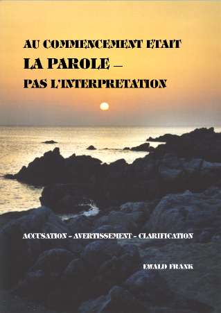
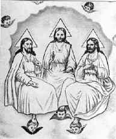

|  |
|
Titre original de louvrage: Auteur: Copyright © 2003 by Traduit de lallemand. Tout droit de reproduction, même partiel, est réservé. Editeur: |
|
|
TABLE DES MATIERES |
| Le Nom dans l'Ancien et le Nouveau Testament | |
| La grande apostasie | |
| Défi | |
| Quest-ce qui est digne de foi? | |
| Le temps est proche | |
| Voici, Je viens bientôt! | |
AU COMMENCEMENT ETAIT LA PAROLE
PAS LINTERPRETATIONACCUSATION AVERTISSEMENT CLARIFICATION
Sans passer par lintroduction habituelle, venons-en directement au fait. Pour toute critique et jurisprudence concernant les affaires bibliques doctrines ou pratiques qui sont lobjet dune discussion, Dieu a déjà décidé et montré par Sa Parole ce qui est valable. Cest pourquoi dans cet exposé nous nemploierons que la Parole de Dieu, éternelle et incorruptible telle quElle se trouve dans la Bible. Cest Elle qui sera aussi employée au «dernier jour», lors du «jugement final» et de la jurisprudence finale. Maintenant, comme lors dune instruction, une accusation doit être élevée devant la justice de Dieu, un avertissement doit être donné afin quune clarification soit possible.
Laccusation est la suivante: tromperie religieuse continuelle. Comme nous le verrons, tout en se réclamant de Dieu et de la religion, lhumanité est encore et toujours conduite dans le mensonge et la tromperie. Sil ny avait rien quune chance de pouvoir changer après la mort notre destinée éternelle, personne ne se donnerait la peine délever cette accusation. Cependant il est écrit Et comme il est réservé aux hommes de mourir une fois, et après cela le jugement (Héb. 9.27).
Laccusation nest pas dirigée contre un inconnu, mais en premier lieu contre lensemble du clergé sur toute la terre. Du point de vue humain on pourrait invoquer des circonstances atténuantes, parce que nous sommes véritablement tous nés trompés, nés dans des traditions héritées. Mais du point de vue de Dieu il ny a aucune excuse, parce quIl nous a laissé la Bible comme seule norme valable. Cest ainsi que le Seigneur Jésus dit: Moi, je suis venu dans le monde, la lumière, afin que quiconque croit en moi ne demeure pas dans les ténèbres. Et si quelquun entend mes paroles et ne les garde pas, moi, je ne le juge pas; car je ne suis pas venu afin de juger le monde, mais afin de sauver le monde. Celui qui me rejette et qui ne reçoit pas mes paroles, a qui le juge; la parole que jai dite, celle-là le jugera au dernier jour (Jean 12.46-48).
Tous étudient les Saintes Ecritures, mais à cause de leur manière personnelle de voir, ils parviennent à des résultats tout à fait différents. Faire des recherches et étudier ne suffit pas, et cest ce que fait lensemble du clergé. Cela doit commencer par une expérience personnelle de salut et en suivant premièrement Jésus-Christ. Il est véritablement le point central de toute la révélation de Dieu et en Lui se trouvent cachés tous les trésors de la sagesse et de la connaissance (Col. 2.2,3). Cest pourquoi il est écrit: Sondez les écritures, car vous, vous estimez avoir en elles la vie éternelle, et ce sont elles qui rendent témoignage de moi: et vous ne voulez pas venir à moi pour avoir la vie (Jean 5.39,40).
Cest tout aussi fondamentalement inadmissible dapporter son propre point de vue sur un thème biblique. Chacun doit se placer sous le jugement de la Parole. Le Juge suprême ne prononcera le jugement, aujourdhui comme au dernier jour, uniquement quen conformité avec Sa Parole. Lapôtre Paul écrit: car nous comparaîtrons tous devant le tribunal de Dieu (Rom. 14.10). Dans la deuxième lettre aux Corinthiens il souligne encore une fois: Cest pourquoi aussi nous nous appliquons avec ardeur à lui être agréables; car il faut que nous soyons tous manifestés devant le tribunal du Christ (2 Cor. 5.9,10). Le jugement final est clairement placé devant nos yeux dans Apocalypse 20, à partir du verset 11.
Il sagit maintenant que tous ceux qui se réclament de Dieu laissent valoir les doctrines bibliques et les pratiques du temps des apôtres. En effet ces derniers nous les ont laissées comme modèles. Après Sa résurrection, le Seigneur enseigna Ses disciples pendant les quarante jours précédents Son ascension (Luc 24.50,51). Cest seulement après cela, quà Ses apôtres élus auxquels Il avait rendu témoignage dêtre vivant (Actes 1.1-3), quIl commanda de faire de toutes les nations des disciples et de leur enseigner à garder toutes les choses quIl leur avait commandées (Mat. 28.20). Cela arriva et saccomplit encore, au travers de tous les véritables serviteurs de Dieu, depuis la première prédication de Pierre le jour de Pentecôte, et cela sera encore dans la dernière prédication la même doctrine et la même pratique. Cest ainsi que saccomplit la Parole du prophète Esaïe 54.13: Et tous tes fils seront enseignés de lEternel, et la paix de tes fils sera grande. Dans lEvangile de Jean, le Seigneur se rapporta à cette Parole et dit: Il est écrit dans les prophètes: «Et ils seront tous enseignés de Dieu». Quiconque a entendu le Père et a appris de Lui, vient à moi (Jean 6.45).
Laccusation sera élevée contre tous ceux qui ont changé la Parole originelle de Dieu telle quElle se trouve dans la Bible; elle sélèvera contre ceux qui Lont changée et en ont faussé les doctrines. Maintenant lhumanité doit entendre encore une fois le Message divin prêché clairement et en vérité dans Sa version originale. Il est déplorable que tous les scribes modernes et lettrés des Ecritures, ainsi que tout le monde religieux sen aillent leur propre chemin; ils parlent du salut, mais ils ne marchent pas sur le chemin du salut tel quil était dans le Christianisme primitif.
Au cours de mon ministère de prédicateur, de plus de quarante années, jai été conduit dans plus de 130 pays et également dans presque toutes les confessions et églises de cette terre. A cause de cela je peux dire que je suis bien placé pour être au courant de ce qui se passe dans le monde religieux. Partout maintenant lesprit oecuménique supplante avec force lesprit de parti religieux, et il conduit doucement dans le multi-culte-système, dans la «Communauté Mondiale des Etats», où chacun trouve une place. Ainsi, par exemple, le soi-disant «Credo apostolique», plus précisément «Credo de NicéeChalcédoine», est formulé seulement en 325 et 381 après Christ, est devenu plus ou moins le bien commun de la plupart des communautés de foi chrétiennes. Il y est dit entre autre: «Je crois en une seule Eglise sainte, catholique à la communion des saints ». Une confession de foi en douze points ma été présentée dans une communauté du Plein Evangile, en ExtrêmeOrient. Le neuvième point était le passage que nous venons de mentionner. Quelque chose de semblable mest de nouveau arrivé il y a peu de temps, dans une capitale de lAmérique centrale, lorsque le président des Eglises pentecôtistes, encore avant même que jaie enregistré mon nom à lhôtel, me sollicita à signer tout de suite leur «confession de foi». Ce nest quaprès avoir signé cela que toutes les portes dans le pays mauraient été ouvertes pour des conférences. Cependant, déjà à cause du premier paragraphe je naurais pu en toute bonne conscience signer. Dieu soit remercié quIl changea les sentiments de cet homme, lequel mouvrit toutes les portes.
Ces derniers temps, ce qui me trouble profondément lors de mes voyages missionnaires, cest la pratique très répandue de terminer la prière finale par la formule: «Au Nom du Père, et du Fils, et du Saint-Esprit». En plus, ce qui est vraiment déconcertant, cest que lon prie ensuite pour la louange du Père, puis pour celle du Fils, et finalement pour celle du Saint-Esprit; chaque fois le même temps y est consacré car, dit-on, «tous les trois» sont dignes du même honneur et de la même adoration. Lorsquil est dit: «Maintenant nous voulons saluer la personne du Saint-Esprit avec des applaudissements et Lui souhaiter une bienvenue toute particulière par un: Bonsoir, Saint-Esprit», cest vraiment aller trop loin: cest déjà du blasphème! Quelle valeur, pour de telles personnes, peut bien avoir la manière vraiment apostolique: Béni soit le Dieu et Père de notre Seigneur Jésus-Christ, qui nous a bénis de toute bénédiction spirituelle dans les lieux célestes en Christ (Eph. 1.3, et autres)? Presque partout également, lors de la prière finale, nest employée quune formule, à savoir: La grâce du Seigneur Jésus-Christ, et lamour de Dieu, et la communion du Saint-Esprit, soient avec vous tous!. Celui qui lit les épîtres de Paul constatera quil na absolument pas pensé à établir une norme ou une forme quelconque, car chacune de ses lettres se termine de façon différente. Lépître aux Romains a même deux salutations finales et elles ne sont absolument pas semblables: Or, que le Dieu de paix soit avec vous tous! Amen! (Rom. 15.33). au Dieu qui seul est sage, par Jésus-Christ auquel soit la gloire éternellement! Amen! (Rom. 16.27). Dans la dernière ligne du dernier livre de la Bible, il est dit: Que la grâce du Seigneur Jésus-Christ soit avec tous les saints. Pourquoi donc quelquun devrait-il introduire une formule fixe, et ne pas permettre que le Saint-Esprit puisse conduire librement?
De tels événements, ainsi que maints autres encore, sont les motifs qui mont amené à cet exposé qui doit, en même temps, représenter un défi et une mise en garde. Quest-ce qui est réellement écrit dans les Saintes Ecritures, et quest-ce qui vient à être interprété et compris? Que pratiquaient réellement les apôtres et que peut-il leur être attribué? Cest ce qui doit être demandé et aussi clairement démontré! Quest-ce qui est Parole de Dieu, et quest-ce qui est interprétation?
[RETOUR à la table des matières]AINSI COMMENÇA LA TROMPERIE
Les premiers hommes, en qui nous avons tous été représentés, sont tombés dans le péché parce quils ont écouté lennemi qui a faussé la Parole pour Eve, et de cette façon il a porté le premier mensonge sur la terre. La chose est généralement connue. Nous avons tous expérimenté le même sort et navons pas résisté à la tentation. Comme cela est arrivé lors de la chute dans le péché, nous tous sommes nés dans ce monde par lengendrement charnel. Ainsi la mort nous a tous rejoint.
Depuis que la rédemption a été pleinement accomplie, lennemi a toujours réussi à tordre la Parole pour les croyants superficiels, et à rendre croyables ses mensonges religieux. LEglise primitive nest demeurée quun temps très court dans la pure doctrine divine. La confession: Un seul Seigneur, une seule foi, un seul baptême (Eph. 4.5) fut bien vite laissée hors dattention par les falsificateurs. Paul, en particulier, a dû déjà sexpliquer avec les faux docteurs au sujet de leurs doctrines non bibliques, lesquelles viennent toujours des démons (1 Tim. chap. 4). Il dit à lavance que des hommes sélèveraient dans lEglise et quils enseigneraient de fausses doctrines. Cela arriva, bien quil ait prêché tout le conseil de Dieu et quil ait établi des anciens dans lEglise sous la direction du Saint-Esprit (Actes 20.24-32). Lui-même et les autres apôtres mirent en garde les croyants contre ceux qui provoquent des divisions et séloignent de la saine doctrine.
Cela remonte au jardin dEden. Cest là que tout a commencé. Le Seigneur Dieu avait clairement parlé, en avertissant: mais de larbre de la connaissance du bien et du mal, tu nen mangeras pas; car, au jour que tu en mangeras, tu mourras certainement (Gen. 2.17). Dieu pense toujours ce quIl dit, et Il dit toujours ce quIl pense. Lennemi tord la Parole et La tourne, il La remet en question et dit: Quoi, Dieu a dit: Vous ne mangerez pas de tout arbre du jardin?. Et il dit: Vous ne mourrez point certainement; car Dieu sait quau jour où vous en mangerez vos yeux seront ouverts, et vous serez comme Dieu, connaissant le bien et le mal (Gen. 3.1-7). Oui, et lorsque cela arriva, leurs yeux souvrirent réellement. Cependant, par la chute dans le péché, ils se retrouvèrent nus et séparés de Dieu. Les feuilles de figuier ne suffirent pas pour couvrir leur honte; aujourdhui encore cela ne sert à aucun de chercher à couvrir la honte de la chute de lEglise dans le péché par la feuille de figuier de quelque religion que ce soit.
Lennemi vient toujours dune manière très pieuse, comme un ange de lumière (2 Cor. chap. 11), et avec le: Il est écrit!. Les deux viennent dune inspiration: ce qui est vrai et ce qui est faux. Ce qui est authentique, provenant de lEsprit de Dieu, prouve constamment sa véracité, car de saints hommes de Dieu ont parlé, étant poussés par lEsprit-Saint (2 Pier. 1.20,21).
Comme avertissement il est écrit: Or lEsprit dit expressément quaux derniers temps quelques-uns apostasieront de la foi, sattachant à des esprits séducteurs et à des enseignements de démons (1 Tim. 4.1).
Car il y aura un temps où ils ne supporteront pas le sain enseignement; mais, ayant des oreilles qui leur démangent, ils samasseront des docteurs selon leurs propres convoitises, et ils détourneront leurs oreilles de la vérité et se tourneront vers les fables (2 Tim. 4.3,4).
Or il y a eu aussi de faux prophètes parmi le peuple, comme aussi il y aura parmi vous de faux docteurs qui introduiront furtivement des sectes de perdition, reniant aussi le maître qui les a achetés, faisant venir sur eux-mêmes une prompte destruction (2 Pier. 2.1).
Tout prédicateur doit se laisser poser la question, sil prêche un quelconque message chrétien, ou sil prêche le Message de Christ. Chacun, peu importe quil prêche ou quil écrive, doit séprouver lui-même et aussi se laisser éprouver, pour savoir sil communique la vraie ou la fausse doctrine. Etre sincère ne suffit pas, car chacun lest à sa manière. Il faut que soit établi comment chacun est classé du point de vue des Ecritures, car: Toute écriture est inspirée de Dieu, et utile pour enseigner (2 Tim. 3.16,17). Les traditions et les convictions religieuses, même si lEcriture est citée, nont pas de valeur devant Dieu quand la signification de celle-ci et lusage qui en est fait sont rapportés et employés de manière erronée. Après une recherche plus exacte il ne reste plus alors quune piété personnelle. Il sagit donc maintenant de connaître la différence infinie quil y a entre la signification réelle de la Parole et les nombreuses interprétations faites à Son sujet.
Paul voulait présenter à Christ, lEpoux céleste, une EgliseEpouse pure, qui puisse rencontrer lEpoux dans létat dune vierge non touchée, nayant commis aucune fornication spirituelle. Mais aussitôt il exprime la crainte que, comme le serpent séduisit Eve par sa ruse, ces croyants simples, qui écoutent fidèlement, soient aussi séduits si un autre Jésus leur est annoncé, un autre évangile leur est prêché, et un esprit étranger est à loeuvre (2 Cor. 11.1-4). Cependant, qui conviendra que nous sommes plus ou moins nés dans un Christianisme plus ou moins faussé? Ceux qui persistent dans leur erreur sans le savoir devront aussi prendre place sur le banc des accusés, car même le manque de connaissance religieuse ne nous met pas à labri de la punition. Cest à cela que devrait penser tout prédicateur, et il devrait éprouver ce quil dit à la lumière de la Parole de Dieu, pour connaître si, sans le savoir, il ne transmet pas un Evangile faussé. En effet, une personne surprise en train de transmettre un faux billet de banque doit sattendre à être punie, même si elle na pas su que largent était faux.
Les croyants, qui sont généralement inconscients, se reposent sur les argumentations de lennemi, lesquelles continuent à être répandues par les scribes chrétiens. Eve ne remarqua aucunement quelle avait été trompée par lennemi et séduite, parce quil lui déforma si explicitement la Parole, La transformant au contraire, et par cela même Lempoisonna dun venin mortel. Nous-mêmes, nous navons rien remarqué avant davoir été réveillés et éclairés. Lennemi a commencé par apporter le doute sur ce que Dieu avait dit. Il était demeuré sur le thème, mais non sur la Vérité originelle de la Parole, telle quElle était sortie de la bouche de Dieu. Cest en cela que consiste encore aujourdhui la grande tromperie dans lensemble du monde religieux. Le diable na aucun thème qui lui est propre la plupart ne comprennent pas cela. Il emploie toujours les thèmes religieux des dénominations. Il na pas de doctrine propre il reprend élégamment la Parole de Dieu et La déforme. Ce sont les thèmes bibliques sur Dieu, sur le baptême, sur le Souper du Seigneur, et ainsi de suite, quil fait croire aux hommes dans une manière non biblique. Il vient avec le: Il est écrit comme nous pouvons le lire dans Matthieu, chapitre 4. En ce temps-là il a arraché et séparé la Parole écrite de son contexte cest en cela que consiste la tentation proprement dite et il le fait encore aujourdhui sans que les hommes le réalisent, parce quils supposent quil est toujours quelque part ailleurs. Aux uns il cite Matthieu 28.19, aux autres Jean 20.23, mais il se garde bien de mentionner le: Mais il est aussi écrit de Actes 2.38. Il élèvera toujours un passage biblique contre un autre passage par contre lEsprit de Dieu amène chaque passage biblique en harmonie avec lautre.
Satan ne nie pas davantage Dieu que la Parole de Dieu. Mais il est occupé jour et nuit à endoctriner les hommes selon son point de vue des choses, et particulièrement ceux qui se trouvent dans toutes les écoles bibliques et les séminaires de prédicateurs, ainsi que lensemble du clergé. Dans le jardin dEden, la chute dans le péché du corps naturel était la conséquence de la séduction, et tout le monde en souffre encore aujourdhui. Dans lEglise cest lapostasie à légard du SEUL vrai Dieu et de Sa Parole, qui par la désobéissance conduit à la déviation de la Parole, sous laquelle lEglise souffre encore et toujours.
Lors du premier Concile oecuménique de Nicée, en 325, les 250 représentants des divers courants religieux débattirent des thèmes bibliques, et plus spécialement sur Christ et la Divinité. On doit cependant se demander pour quelle raison les prophètes et les apôtres ne se sont jamais disputés sur ces thèmes?
Combien le ciel entier a-t-il dû pleurer et tout lenfer se réjouir, lorsque le prince de ce monde a réussi à annuler la Parole de Dieu et à introduire à la place des théorèmes formulés par des hommes qui ne connaissaient pas du tout Dieu. Lhellénisme et les pensées philosophiques païennes ont visiblement dominé les pères de lEglise. Comme aucun dentre eux ne connaissait la langue araméenne ou hébraïque pour pouvoir lire le texte original, aucun ne connaissait ni le caractère de lAncien Testament en rapport avec lhistoire du salut, ni le Dieu dIsraël. Tous avaient accepté le Christianisme comme religion, mais aucun navait reçu Christ comme Rédempteur et Seigneur. Aucun dentre eux ne pouvait témoigner davoir reçu un appel divin. Nous pouvons lire, sous la plume décrivains réputés de lhistoire de lEglise, que tous les pères de lEglise, sans aucune exception, par leurs déclarations méchantes, ont semé la haine envers les Juifs. Ignace dAntioche commença et tous suivirent son exemple: Justinien, Hippolyte, Cyprien, Grégoire de Nisse, Origène, comme aussi Tertullien et Athanase, jusquà Chrysostome et Hieronymus, etc. Léon Ier, qui exerça le pouvoir depuis 441 et qui du point de vue protestant est généralement considéré comme le premier Pape, les surpassa tous. Ce ne sont que malédictions, méchantes accusations, déportations des Juifs, qui eurent lieu sous linfluence des princes de lEglise. La première conséquence concrète de linfluence des «pères des conciles», comme on les a appelés plus tard, fut manifestée déjà en 321, lorsque lempereur Constantin décréta que les Juifs avaient linterdiction, sous menace de sanctions, de célébrer le sabbat, mais il les obligeait par contre à respecter le dimanche. Beaucoup de synagogues furent fermées et devinrent des églises. Ce sont des citations du Nouveau Testament que Satan tordit pour les pères de lEglise et les influença à injurier les Juifs comme meurtriers de Christ, à les rejeter et à les maudire. Cependant, celui qui maudit Israël est maudit par Dieu (Nom. 24.9).
Après que lempereur Théodose I (347-395) ait déclaré le 28 février 380 la foi trinitaire comme seule religion de lEtat, et que le concile de Constantinople lai confirmée en mai 381, tous furent contraints à cette foi. Uniquement lors des sept croisades, entre 1095 et 1291, cest-à-dire en à peine 200 ans, 22 millions de personnes furent mises à mort par lEglise dEtat. «Deus lo vult!» «Dieu le veut!» était le cri de guerre de Godefroi de Bouillon. Lordre pour la première croisade est venu du pape Urbain II «au Nom du Père, du Fils et du Saint-Esprit». Avec un crucifix dans une main et une épée dans lautre, les Croisés ont commis des massacres. Dans lensemble, jusquau Moyen-âge, 50 à 60 millions de personnes ont été les martyrs de l«Eglise de la Trinité», qui était en même temps la puissance dEtat dans le Saint Empire Romain.
Elle est coresponsable dans lère chrétienne de toutes les persécutions infligées aux Juifs. Beaucoup dauteurs cherchent la cause réelle du terrible Holocauste qui a fait 6 millions de victimes. Des siècles ont passé sous la domination protestante prussienne sans quil y ait de persécution des Juifs. Celui qui a lu les livres de Daniel Goldhagen, et dautres auteurs, sait quel est le rôle de lEglise de Rome. Depuis les jours des pères de lEglise, la semence antisémite semée au IVème siècle par ceux-ci est sans cesse réapparue, et cela également par Martin Luther, les Protestants, les Orthodoxes, et dans tout le Christianisme. Conformément à Apocalypse 6.9-11, les âmes de tous ceux qui ont été mis à mort crient vengeance.
Comme lhistoire en rend témoignage, les guerres eurent souvent un arrière-plan politique, mais les persécutions un arrière-plan religieux. Tous les bûchers qui nont pas épargné ni les enfants ni les vieillards, la «Sainte Inquisition» qui fit particulièrement rage avec cruauté en Espagne, enfin, lensemble de lhistoire des martyres est à mettre au compte de l«Eglise dEtat trinitaire» Romaine et de ses représentants. Durant le Moyen-âge, alors que seule régnait lEglise de Rome, nexistait aucun droit de lhomme, aucune liberté de conscience, aucune liberté religieuse ni la liberté de parole ou dexpression. Les bûchers élevés pour brûler les sorcières sont estimés à soixante mille depuis les années 1430. En France, lors du massacre des Huguenots protestants dans la nuit de Saint Barthélemy, les 23 et 24 août 1572, furent massacrés en une seule nuit entre vingt et trente mille personnes. La Bible, le seul Livre sur la terre qui contient la Vérité incorruptible, na jamais imputé à aucune nation la responsabilité davoir fait des martyrs. Nulle part également il nest écrit: «La nation espagnole est responsable de lInquisition». Pareillement on ne peut pas lire: «Les Français sont responsables du massacre des Huguenots», et non plus: «Le peuple allemand est responsable de lHolocauste». Aussi personne ne dira: «Les Autrichiens sont aussi fautifs parce que Hitler était autrichien et Eichmann était autrichien-allemand». LEcriture témoigne clairement que lEglise de Rome est responsable du sang versé des martyrs: Babylone la grande enivrée du sang des saints (Apoc. 17.5,6). Et en elle a été trouvé le sang des prophètes, et des saints, et de tous ceux qui ont été immolés sur la terre (Apoc. 18.24 et autres).
Parce que lAncien Testament a été en général méprisé des princes de lEglise, ceux-ci ne pouvaient donc pas comprendre le Nouveau Testament. Ils ne comprirent pas que ceux qui ont écrit le Nouveau Testament ont fait ressortir limportance de lAncien, quils en ont cité 845 passages, quils ont aussi reconnu et ordonné les relations entre les Juifs et les païens, comme aussi celles existant entre la loi et la grâce, conformément au plan de salut de Dieu. Selon le jugement des Ecritures, les pères des Conciles nétaient rien dautre que des aveugles voulant conduire dautres aveugles. Eux-mêmes et tous ceux qui marchent sur leurs traces se trouveront sur le banc des accusés au jour du jugement de Dieu. Cest dans leur «Credo trinitaire» quils ont eux-mêmes trouvé et formulé et qui est entaché de sang parce quil a conduit à la récusation et au rejet des Juifs, que le Christianisme vit encore aujourdhui. O Dieu, aie compassion!
Pas un seul point de foi, ni aucune doctrine, navait besoin dune nouvelle formulation. Le Nouveau Testament, avec le vrai credo prophétique-apostolique, se trouvait déjà dans le canon du Nouveau Testament, Lequel demeure pour toujours la seule règle valable.
LEglise du Nouveau Testament était fondée sur le fondement commun des apôtres et des prophètes dont Jésus-Christ Lui-même est la Pierre angulaire (Eph. 2.20). Paul, en tant que sage architecte établi par le Seigneur, en a posé le fondement. Mais la grande question est de savoir comment bâtissent les autres (1 Cor. 3.10-15)! Conformément à 1 Timothée 3.15, la vraie Eglise de Jésus-Christ est la colonne et le soutien de la Vérité pas un pieux château de mensonges (Es. 28.17). Il ny a aussi aucun cas dans lAncien comme dans le Nouveau Testament, où il ait été discuté de savoir qui est Dieu et comment Il se fait connaître. Les serviteurs de Dieu connaissaient le Seigneur Dieu, lEternel, et ne touchaient nullement aucune de Ses révélations. Il ne serait jamais venu à la pensée daucun homme de Dieu, à cause des multiples manifestations de Celui-ci, de vouloir Le partager, pour faire plusieurs personnes du SEUL dont témoigne la Bible dans ses 66 livres.
Nous devons demander très sérieusement: De quel droit les docteurs de la Bible, les professeurs en théologie, les prédicateurs, les évangélistes dans lensemble du Protestantisme et dans toutes les Eglises qui ont pris origine depuis la Réformation, défendent-ils les doctrines introduites par lEglise de lEmpire de Rome? Ne confondent-t-ils pas ainsi le droit divin avec le droit canonique? Quest-ce quun véritable envoyé de Christ quil soit apôtre, prophète, évangéliste ou pasteur a à faire avec un credo formulé des centaines dannées plus tard dans différents Conciles? De quel droit est-il aussi permis dappeler cette chose «Credo apostolique»?
La confession et les doctrines des apôtres sont exclusivement, et vraiment exclusivement, à trouver dans les Actes des apôtres et dans les Epîtres des apôtres. Toutes autres choses ne sont que falsifications, qui ont pris origine dans les interprétations propres de passages bibliques. Lennemi a véritablement commencé dagir ainsi déjà dans le Christianisme primitif en interprétant la Parole de Dieu, et depuis il na pas cessé de le faire. Sans le savoir le monde religieux en entier est spirituellement aveugle et il ségare, à moins que la révélation ne lui soit donnée. Bien que richement décorées avec des passages bibliques, aussi les doctrines protestantes dans leur ensemble sont demeurées non bibliques, et même dans les églises et dans les communautés du «Plein Evangile», elles sont recouvertes du manteau babylonien. La signification originelle de la Parole est partout annulée par des interprétations personnelles.
[RETOUR à la table des matières]EPROUVEZ TOUTES CHOSES
Maintenant voici ce qui est pour beaucoup, la première surprise, celle qui secoue tout et tous: Il ny a pas une seule action dans toute la Bible qui ait été faite au Nom du Père, du Fils et du Saint-Esprit! Cette constatation importante aura, espérons-le, auprès de ceux qui se trouvent encore dans des traditions non bibliques, déclenché un choc durable et salutaire.
Pour les véritables enfants de Dieu, qui sont réellement fidèles à la Bible et qui nont pas seulement la prétention de lêtre, il ne sagit pas de ce que Athanase, Augustin, Tertullien, Hieronymus, ou dautres ont dit, mais bien de ce quont dit Pierre, Jean, Jacques et Paul, et qui se trouve écrit dans la Parole et qui, pour nous, est le AINSI DIT LE SEIGNEUR.
Ce que Dieu a dit par la bouche de Ses serviteurs qui ont parlé en Son Nom, étant poussés par le Saint-Esprit, ne se trouve dans aucun Catéchisme, ni dans aucun livre denseignement dEglise, pas davantage dans la «Didachè» appelée faussement «Doctrine des douze apôtres», et encore moins dans le Talmud ou le Coran, mais bien uniquement dans la Bible. Il ny a quun seul Absolu: les Saintes Ecritures.
Il faut que soit pris au sérieux par tous ceux qui ont la crainte de Dieu le fait que, dans le Christianisme primitif, aucune prière na été commencée ou terminée par la formule trinitaire.
Pas un seul baptême, aucune guérison, aucune bénédiction absolument rien, vraiment rien dans les temps bibliques nest arrivé par la formule: «Au Nom du Père, du Fils et du Saint-Esprit». Cela est accepté comme allant de soit uniquement en se basant sur une tradition ecclésiastique.
Mais maintenant tous devraient approfondir les Saintes Ecritures telles quElles nous sont présentées et venir à la connaissance de comment sont les choses en réalité. Celui qui a étudié lhistoire universelle de lEglise, regardant consciemment à ce thème important, aura été frappé de constater que jusquà la fin du IIème siècle du Christianisme, selon lexemple des apôtres, toute action se faisait au Nom du Seigneur Jésus-Christ comme aussi cela nous a été transmis de manière saisissante dans les Saintes Ecritures du Christianisme primitif par les témoins du temps de Jésus
Cest là que je me tiens, fondé sur le fondement des apôtres et des prophètes! Je ne peux faire autre chose! Que Dieu me soit en aide!
Les questions suivantes ne sont pas posées pour offenser quiconque, mais dans la pensée déprouver et déclairer. Chaque lecteur doit avec amour, mais aussi avec le sérieux nécessaire qui nous est indispensable, être conduit à réfléchir et à entreprendre les corrections nécessaires.
[RETOUR à la table des matières]POURQUOI? POURQUOI?
Pourquoi la parole «Trinité» ne se trouve-t-elle pas une seule fois dans la Bible?
Pourquoi lexpression «Dieu trois en un» ne se trouve-t-elle pas une seule fois dans la Bible?
Pourquoi ne se trouve-t-il pas mentionné une seule fois dans la Bible que Dieu consiste en trois Personnes?
Pourquoi dans toute la période de lAncien Testament personne na-t-il prié «Père qui est dans le ciel»?
Pourquoi ne se trouve-t-il pas une seule fois dans la Bible «Dieu le Fils», mais bien Fils de Dieu?
Pourquoi ne se trouve-t-il en Elle pas une seule fois «Dieu le Saint-Esprit», mais bien lEsprit de Dieu? Cependant il est certain que puisque Dieu est le point de départ de toute chose, le Saint-Esprit est lEsprit de Dieu, ou bien non?
Pourquoi donc se trouve le mot combiné «Seigneur Dieu» «ELOHIMYAHWEH», plus de six mille fois dans lAncien Testament, alors que depuis lEvangile de Matthieu jusquà lépître de Jude il ne se trouve pas une seule fois dans le Nouveau Testament si ce nest dans une citation de lAncien Testament (Luc 1.32) et quil réapparaît dans le livre prophétique de lApocalypse? Dans lAncien Testament il est le Seigneur; dans le Nouveau Testament nous lisons: Mais Dieu a ressuscité le Seigneur, et il nous ressuscitera par sa puissance (1 Cor. 6.14).
Pourquoi dans les Actes des apôtres laccent est-il mis sur «Dieu» en tant que Père, et sur «le Seigneur» en tant que Fils? Certainement parce que Dieu est devenu notre Père par Jésus-Christ notre Seigneur.
Pourquoi est-il dit en rapport avec la naissance du Fils: et on appellera son nom Dieu fort, Père du siècle (Es. 9.6), et cependant pas une seule fois «Fils éternel»?
Pourquoi ny a-t-il pas un seul passage dans la Bible, pendant la période de lAncien Testament, où ait été rapportée «une conversation entre le Père et le Fils» dans le ciel? Certainement parce que Dieu ne sétait pas encore révélé comme Père dans le Fils.
Pourquoi les Saintes Ecritures ne disent-Elles rien sur le fait que Dieu, en tant que Père, ait engendré le Fils dans léternité et quIl soit né alors à ce moment-là? Simplement parce que la chose na pas eu lieu! La naissance du Fils a été annoncée dans tout lAncien Testament, et elle sest accomplie au commencement du Nouveau Testament. Cest là la Vérité divine et biblique! Cest pourquoi une «pré-existence» du Fils ne se trouve pas dans la Bible.
Pourquoi nous a-t-il été ordonné de prier: Notre Père qui est dans les cieux, que ton nom soit sanctifié (Mat. 6.9)? et pourquoi prie-t-on seulement «Père céleste», et non pas: «Fils céleste»? Certainement parce quil ny a aucun Fils céleste!
Pourquoi le Seigneur Dieu a-t-Il toujours juré par Lui-même: Jai juré par moi-même, dit lEternel (Gen. 22.16; Ps 89.35; Amos 6.8; Héb. 6.13 et autres)? Si ce nest bien parce quà Ses côtés il ny avait pas dautre Personne divine!
Où donc se trouve dans la Bible: «Le Père est éternel, le Fils est éternel, le Saint-Esprit est éternel»? Naturellement, nulle part! Comment dans la Parole de Vérité pourrait-il se trouver ainsi quelque chose de mensonger? Cest exclu!
Pourquoi ne se trouve pas une seule fois dans la Bible: «Gloire à Dieu le Père, à Dieu le Fils et à Dieu le Saint-Esprit!»? Cest intentionnellement que ne suit pas l«amen», parce que cela signifie: «Ainsi soit-il!» et ce nest pas du tout comme cela!
Pourquoi nest-il pas écrit une seule fois dans la Bible: «PèreCréateur»? Quest-ce que «Père» a à faire avec la création? Ou quest ce que le Créateur a à faire avec des fils et des filles engendrés?
A légard de la création, Dieu est le Créateur. A légard de Ses fils et de Ses filles, Dieu est Père.
Pourquoi aucun prophète dans lAncien Testament, ni aucun apôtre dans le Nouveau, na-t-il jamais interprété le: Faisons lhomme à notre image de Genèse 1.26-28, en lattribuant à plusieurs Personnes dans la Divinité? Cest parce quils se trouvaient sous la direction de lEsprit.
Pourquoi aucun des apôtres na-t-il répété lordre de baptiser de Matthieu 28, mais quils lont au contraire bien compris et exécuté fidèlement en baptisant directement dans le Nom dAlliance du Nouveau Testament, Nom dans Lequel Dieu en tant que Père, Fils et Saint-Esprit sest révélé? Cest parce que le Nom dans Lequel il fallait être baptisé leur avait été révélé.
Cest la raison pour laquelle, dans le Christianisme primitif, jusquà la fin du IIème siècle, ceux qui étaient devenus croyants étaient baptisés correctement selon lordre de mission, uniquement au Nom du Seigneur Jésus-Christ (Actes 2.38, 8.16, 10.48, 19.5; Rom. 6.3 et autres), et pas une seule fois dans la formule trinitaire.
De plus, partout où se trouve le Christianisme faussé, la formule trinitaire est employée ainsi que pour la divination: lecture des lignes de la main, lévitation des tables, interrogation des esprits et pour toutes sortes denchantements, de magies et doccultisme; elle est aussi employée pour entrer dans des ordres secrets lors de lassermentation. Même le voeu de fidélité pour entrer dans les loges de franc-maçonnerie est fait, même par les Juifs, «au Nom du Père, du Fils et du Saint-Esprit».
Personne ne doit être indifférent sur le fait que pas une seule prière, et même aucune action, dans la Bible, na été faite dans la formule trinitaire! Eprouvez toutes choses, aussi cette pratique exercée par presque tous les chrétiens! Quest-ce donc qui doit valoir pour toujours? La Parole de Dieu ou les traditions des Eglises? La Bible a-t-Elle raison, ou est-ce que ce sont les argumentations?
En présence de toutes les modifications, de toutes les interprétations et falsifications, nous devons demander: Pourquoi y a-t-il des prédicateurs, des évangélistes et des docteurs de la Bible qui ont la Parole de Dieu dans la bouche et qui continuent dans une foi aveugle et pleine denthousiasme à enseigner des doctrines traditionnelles non bibliques? Cette prise de position doit avoir lieu avec lespoir que le lecteur, après lexposition de toutes ces déviations, donne raison sur tous les points à Dieu et à Sa Parole. Il ny a rien dautre: toutes choses et toutes personnes doivent être placées devant le jugement de Dieu et cela dès maintenant, non plus tard quand il sera trop tard. Cest aujourdhui que lavertissement doit être donné!
Tous les points présentés se laissent éclairer par la Parole de Dieu. Mais il ny a aucune place pour des argumentations. Lennemi a trompé trop longtemps les croyants avec cela. Maintenant ne subsiste plus que la question principale: Quelle est la vérité sur la Trinité, le Dieu en trois Personnes? La vérité est que cela na jamais existé dans lEternité, pas plus que cela na existé au cours des temps, et que cela nexistera jamais dans lEternité!
En toute franchise il faut également demander: Pourquoi les Saintes Ecritures ne connaissent-Elles pas non plus la doctrine des «Jesus Only»/«Jésus seul»? Parce quelle aussi est non-biblique! Comment le Fils, qui a été engendré, pourrait-Il être Son propre Père? Et comment pourrait-Il sêtre adressé à Lui-même des prières, etc.? Le témoignage venu du haut du ciel est exprimé ainsi: Celui-ci est mon Fils bien-aimé, en qui jai trouvé mon plaisir (Mat. 3.17, 17.5). Seul celui qui confesse que Jésus-Christ est le Fils de Dieu a la Vie éternelle (Jean 3.36). Et cest ici la vie éternelle, quils te connaissent seul vrai Dieu, et celui que tu as envoyé, Jésus-Christ (Jean 17.3). Ainsi, comme la doctrine de Dieu en trois Personnes est blasphématoire envers Dieu, de même se trouve être aussi fausse la doctrine des «Jésus seul». Ce qui demeure seul valable pour toujours est le témoignage des Saintes Ecritures, incluant toutes choses et dans lequel Dieu est révélé dans Sa diversité. Dans le Nouveau Testament est révélé que Dieu, en tant que Père, est au-dessus de nous dans le ciel, dans le Fils Il était sur la terre parmi nous et par le Saint-Esprit Il est en nous. Cest pour nous le mystère incompréhensible et inexplicable de Dieu, duquel Paul écrit: Et, sans contredit, le mystère de la piété est grand: Dieu a été manifesté en chair, a été justifié en Esprit, a été vu des anges, a été prêché parmi les nations, a été cru au monde, a été élevé dans la gloire (1 Tim. 3.16).
Lorsque Dieu, selon Son plan de salut élaboré dans lEternité, en a terminé avec tous Ses fils et Ses filles, la révélation du Fils débouche de nouveau en Dieu, Duquel elle est sortie, afin que soit accomplie cette parole: Mais quand toutes choses lui auront été assujetties, alors le Fils aussi lui-même sera assujetti à celui qui lui a assujetti toutes choses, afin que Dieu soit tout en tous (1 Cor. 15.28). Oh! quelle profondeur du mystère de la piété: Dieu en Christ et Christ en nous lespérance de la gloire!
Toutes les promesses faites dans lAncien Testament, de Genèse 3.15 jusquà Malachie 3.1, en rapport avec la venue du Fils, se sont accomplies au commencement du Nouveau Testament. Quelquun veut-il réellement nier cela?
2 Samuel 7.14 sest accompli: Moi, je lui serai pour père, et lui me sera pour fils (Héb. 1.5b).
Psaume 2.7 sest accompli: Tu es mon Fils, moi je tai aujourdhui engendré (Héb. 1.5a).
Saccomplit aussi: Cest à toi que je fus remis dès la matrice (Ps. 22.10).
Saccomplit aussi le Psaume 89.26,27: Lui me criera: Tu es mon père, mon Dieu, et le rocher de mon salut. Aussi moi, je ferai de lui le premier-né, le plus élevé des rois de la terre.
Saccomplit également Esaïe 7.14: Cest pourquoi le Seigneur, lui, vous donnera un signe: Voici, la vierge concevra et elle enfantera un fils, et appellera son nom Emmanuel.
La proclamation disait: et elle enfantera un fils, et tu appelleras son nom Jésus (Mat. 1.21; Luc 1.31).
car aujourdhui, dans la cité de David, vous est né un sauveur, qui est le Christ, le Seigneur (Luc 2.11). Avec cela saccomplit Michée 5.1,2, et le Sauveur est né à Bethléem (Mat. 2.1).
Lors de la première venue de Christ saccomplirent en tout 109 prophéties. Cependant les scribes qui étudiaient chaque jour la Parole de Dieu ne le comprirent pas. Ils persévérèrent dans leurs interprétations et dans leurs propres représentations des choses. Bien quils aient ardemment attendu la venue du Messie et aient entretenu le peuple éveillé dans cette espérance, ils ne le reconnurent point lorsquIl vint (Jean, chap. 1), et même le contredire à toute occasion. Toutes leurs offrandes, le chant des Psaumes et lensemble des solennités de leur culte à Dieu tout était en vain. Je me demande si maintenant, pour la majorité des croyants qui attendent le retour de Christ, la même chose ne se répète pas? Cela en a toutes les apparences.
Le Seigneur Lui-même nous indique la révélation, sans laquelle personne, vraiment personne, quil soit ce quil veuille et Dieu ne fait aucune exception ne peut reconnaître ce glorieux mystère de Dieu en Christ. Cest pourquoi il est écrit: Toutes choses mont été livrées par mon Père; et personne ne connaît le Fils, si ce nest le Père; ni personne ne connaît le Père, si ce nest le Fils, et celui à qui le Fils voudra le révéler (Mat. 11.27). Il veut maintenant Se tourner vers chacun, comme Il le fit à cette époque: Et se tournant vers les disciples, il leur dit en particulier: Bienheureux sont les yeux qui voient ce que vous voyez! (Luc 10.23). Aucune étude nest suffisante, mais au contraire la révélation est nécessaire pour la connaissance de Dieu en Christ, ainsi que pour tous les mystères du Royaume de Dieu. Ce que Paul avait étudié, il la plus tard littéralement considéré comme des «ordures» (Phil. 3.8). Ce qui comptait beaucoup plus pour lui était dapprendre à connaître le Seigneur et Sa puissance de résurrection. Il pouvait écrire, après avoir été établi dans le service à cause de la révélation qui lui avait été donnée: daprès quoi, en le lisant, vous pouvez comprendre quelle est mon intelligence dans le mystère du Christ (Eph. 3.4).
Tout serviteur de Dieu appelé au service doit pouvoir lexpérimenter. Sans vouloir offenser quelquun, lexpression elle-même «Etudier la théologie», qui signifie en fait «Etudier Dieu», est fortement exagérée. Qui donc veut étudier quelque chose sur Dieu? Dès le commencement Dieu sest révélé aux Siens et Il veut aussi se révéler à nous.
[RETOUR à la table des matières]QUEST-CE QUI EST REELLEMENT SAINT?
En tant que missionnaire ayant voyagé pendant quatre décennies sans interruption sur tous les continents, je sais que pour les hommes de toutes les religions et cultures, beaucoup de choses sont saintes. Chez les uns cest la «vache sacrée» ou la «montagne sacrée», chez les autres ce sont les «saintes eaux» ou le «saint temple», le «saint lieu de pèlerinage» ou le «saint prophète», la «sainte tradition» ou dautres choses encore. Mais quest-ce que tout cela a donc à faire avec Dieu? Naturellement, rien du tout! Pour les croyants bibliques, Dieu seul est saint et tout ce qui vient de Lui, comme tous ceux qui ont été sanctifiés par Lui dans la Vérité de Sa Parole, le sont par Celui qui a dit: vous serez saint, car je suis saint! (Lév. 11.44, 19.2; 1 Pier. 1.16). Il ne peut y avoir aucune sanctification par la volonté dun homme, car il est écrit: Cest par cette volonté que nous avons été sanctifiés, par loffrande du corps de Jésus-Christ faite une fois pour toutes (Héb. 10.10). Cest pour les Siens que le Sauveur a prié: Sanctifie-les par la vérité; ta parole est la vérité (Jean 17.17), et Il intercéda pour eux dans la prière sacerdotale: Et moi, je me sanctifie moi-même pour eux, afin queux aussi soient sanctifiés par la vérité (Jean 17.19). Il est aussi écrit: Poursuivez la paix avec tous, et la sainteté, sans laquelle nul ne verra le Seigneur (Héb. 12.14). Se sanctifier soi-même par des oeuvres de justice personnelles signifie se tromper soi-même.
Dans le monde chrétien toute Eglise considère saint tout ce quelle tient pour saint, et pour chaque Eglise ce qui est particulièrement saint, cest ce quelle croit, ce quelle enseigne, ainsi que ses traditions. Cest pourquoi tous veillent sur leur propre doctrine, qui pour eux est sainte, comme on veille à la prunelle de son oeil, et veulent la maintenir pure. Celui qui touche à leur credo, qui est également saint pour eux, peut rapidement devenir un fils de la mort. Cest ce qui arriva à Jan Hus lorsque le 6 juillet 1415, à Constance, sous les éclats de rire des pères du Concile, il fut brûlé sur le bûcher. Michel Servet également, fut condamné à Genève en 1553 et brûlé publiquement parce quil refusait la doctrine trinitaire. Les véritables serviteurs du Seigneur nont employé que «larmure de Dieu», telle quelle est décrite dans Ephésiens 6, et cest à cette dernière quappartient lEpée de lEsprit, cest-à-dire la Parole de Dieu. Pas une seule fois un serviteur du Seigneur na employé la force terrestre, mais au contraire il a seulement prêché la Parole et laissé agir laction de Dieu. Seul ce qui vient de Dieu peut aussi reconduire à Lui. Seul ce qui se trouve dans la Bible porte les traits de la main de Dieu.
Satan, le prince de ce monde, a toujours réussi à susciter la confusion. Il a présenté avec succès, à ceux qui portent une responsabilité dans le domaine religieux et politique, les richesses de ce monde quil avait dabord offertes à Christ et que cependant le Rédempteur avait refusées (Mat. 4.1-11), tout cela afin de pouvoir exercer la domination sur la terre. Après la fondation de lEglise dEtat, le salut fut rendu dépendant dune Institution et de ses fonctionnaires, et non plus de leur foi personnelle en Jésus-Christ, Celui en qui seul se trouve le vrai salut. La prétention dêtre la seule à procurer le salut sétendit à plus ou moins toutes les Eglises dEtat ou indépendantes, ainsi quà toutes les dénominations dans tous les pays. Ce nest pas seulement lEglise de Rome, mais aussi toutes les autres, qui garantissent à leurs membres le salut et le donnent à leur manière. LEglise catholique est «honnête» à cet égard, elle dit à ceux qui sont restés que ceux qui sont partis expient leur punition dans le purgatoire malgré tous les sacrements qui devaient les sauver. Les Saintes Ecritures ne connaissent naturellement pas davantage la doctrine des indulgences que celle des sacrements, ou lexistence dun purgatoire.
Les Saintes Ecritures ne connaissent non plus ni la béatification ni la canonisation des défunts. Seuls les vivants, ceux qui ont obtenu la grâce et qui ont reçu le plein salut en Jésus-Christ sont appelés saints et bienheureux. Depuis ceux que le Seigneur appelle bienheureux dans le Sermon sur la montagne, jusquà ceux du dernier chapitre de la Bible, dans Apocalypse 22.7 et 14, le Seigneur nappelle bienheureux que des vivants, et uniquement ceux-là même qui ont cru en Lui comme le dit lEcriture (Jean 7.38). La déclaration de béatitude faite par le Seigneur à légard de Pierre est tout à fait remarquable: Tu es bienheureux, Simon Barjonas, car la chair et le sang ne tont pas révélé cela, mais mon Père qui est dans les cieux (Mat. 16.17).
Pour Marie, la béatitude est prononcée sur elle en relation avec la foi quelle a eu en la promesse. Et bienheureuse est celle qui a cru; car il y aura un accomplissement des choses qui lui ont été dites de la part du Seigneur (Luc 1.45). Les yeux et les oreilles des véritables disciples de Jésus sont aussi appelés bienheureux: Mais bienheureux sont vos yeux, car ils voient, et vos oreilles, car elles entendent (Mat. 13.16). Dans lintroduction au dernier livre de la Bible, il est dit: Bienheureux celui qui lit et ceux qui entendent les paroles de la prophétie et qui gardent les choses qui y sont écrites, car le temps est proche! (Apoc. 1.3). Et puis nous entendons prononcer la béatitude sur les justifiés parvenus à la perfection, et qui embrasse tout: Bienheureux et saint celui qui a part à la première résurrection (Apoc. 20.6). Les béatitudes que les hommes prononcent nont absolument aucune valeur, parce quelles nont pas de fondement biblique. Cette pratique est aussi à mettre au banc des accusés.
[RETOUR à la table des matières]MATIERE A REFLEXION
Face au proche retour de Christ, il faut principalement traiter la juste connaissance de Dieu et la claire exposition de toutes les doctrines fondamentales de lEglise du Nouveau Testament. Le baptême biblique des croyants qui ont obtenu le pardon, le Souper biblique en souvenir de la réconciliation avec Dieu jusquà ce que vienne le Seigneur (1 Cor. 11.26) cela, et tout le reste, doit de nouveau être rectifié bibliquement. Tous devraient être aussi nobles que les croyants de Bérée (Actes 17.10-15), qui examinaient chaque jour les Ecritures pour voir si ce quon leur disait était exact. Le Dieu éternel qui sest révélé à nous personnellement en Jésus-Christ, peut par Son Esprit donner à chacun la clarté nécessaire. Lui seul est capable de nous sortir de légarement et de la confusion sans espérance de Babylone.
Ce qui est valable pour toujours est: mais que Dieu soit vrai et tout homme menteur, selon ce qui est écrit: «En sorte que tu sois justifié dans tes paroles, et que tu aies gain de cause quand tu es jugé» (Rom. 3.4). Nous ne demeurons vainqueurs que lorsque seule la Parole est notre témoignage, et que nous-mêmes nous sommes pénétrés de la Vérité. puisque cest un seul Dieu qui justifiera la circoncision sur le principe de la foi et lincirconcision par la foi (Rom. 3.30).
Dieu est un seul, comme il est écrit, et malgré toute notre connaissance et notre intellect Il reste insaisissable dans ses multiples révélations. Mais Dieu habitera-t-il vraiment sur la terre? Voici, les cieux, et les cieux des cieux, ne peuvent te contenir (1 Rois 8.27). Déjà au commencement Il pouvait se promener sous une forme visible, par Sa Parole toute-puissante Il pouvait amener toutes choses à lexistence, et en même temps Il planait par lEsprit au-dessus de labîme en apportant la vie. Dieu peut en même temps être dans le ciel et sur la terre, oui, être présent partout. Il peut être dans une forme de chair et également planer sur la terre en esprit, parce quIl est Esprit. Cela ta été montré, afin que tu connusses que lEternel est Dieu, et quil ny en a point dautre que lui. Des cieux, il ta fait entendre sa voix pour tinstruire, et sur la terre, il ta fait voir son grand feu, et tu as entendu ses paroles du milieu du feu Sache donc aujourdhui, et médite en ton coeur, que lEternel est Dieu dans les cieux en haut, et sur la terre en bas: il ny en a point dautre (Deut. 4.35,36 et 39). Il peut être assis sur le trône, descendre dans le feu sur le Mont Sinaï et, en même temps, Il peut parler avec Moïse face à face et cependant faire retentir sa Voix du haut des cieux. Et tu descendis sur la montagne de Sinaï, et tu parlas avec eux depuis les cieux (Néh. 9.13). Il peut être assis sur le trône et en même temps être présent dans la nuée et la colonne de feu pour accompagner personnellement Israël pendant 40 années. Et lEternel allait devant eux, de jour dans une colonne de nuée pour les conduire par le chemin, et de nuit dans une colonne de feu pour les éclairer, afin quils marchassent jour et nuit: la colonne de nuée ne se retira point, le jour, ni la colonne de feu, la nuit, de devant le peuple (Ex. 13.21,22). Le Seigneur Dieu, lEternel, peut se révéler personnellement dans sa diversité sans quIl devienne pour autant une autre Personne. Il est Créateur, Conservateur, Roi, Sauveur, Juge, et bien davantage encore, mais Il demeure toujours le Même.
Dieu est esprit, et il faut que ceux qui ladorent, ladorent en esprit et en vérité (Jean 4.24).
Dieu est un seul: Or un médiateur nest pas médiateur dun seul, mais Dieu est un seul (Gal. 3.20). Car Dieu est un, et le médiateur entre Dieu et les hommes est un, lhomme Christ Jésus (1 Tim. 2.5). Quel est lhomme qui veut se hasarder à continuer de parler de trois Personnes après avoir entendu ce témoignage véritable quIl est «UN SEUL»?
Il est le Seul, lInvisible: Or, quau roi des siècles, lincorruptible, invisible, seul Dieu, soit honneur et gloire aux siècles des siècles (1 Tim. 1.17). Qui osera encore, en face de telles déclarations si claires, prononcer la parole «Trinité» alors que les Ecritures rendent témoignage du «seul Dieu»?
au seul Dieu, notre Sauveur, par notre Seigneur Jésus-Christ, gloire, majesté, force et pouvoir, dès avant tout siècle, et maintenant, et pour tous les siècles! Amen (Jude v. 25). Oui, nous sommes daccord pour le véritable témoignage de lapôtre, que le «seul Dieu», au travers de Jésus-Christ, est devenu notre Sauveur. Amen! Amen!
savoir que Dieu est lumière et quil ny a en lui aucunes ténèbres. Si nous disons que nous avons communion avec lui, et que nous marchions dans les ténèbres, nous mentons et nous ne pratiquons pas la vérité (1 Jean 1.5,6). Seul celui qui marche véritablement dans la lumière de la Parole peut avoir une vraie communion avec Dieu.
Dieu est le seul Souverain qui possède limmortalité: laquelle le bienheureux et seul Souverain, le roi de ceux qui règnent et le seigneur de ceux qui dominent, montrera au temps propre, lui qui seul possède limmortalité, qui habite la lumière inaccessible, lequel aucun des hommes na vu, ni ne peut voir, auquel soit honneur et force éternelle! Amen (1 Tim. 6.15,16). Oui et amen!
[RETOUR à la table des matières]DIEU SE FAIT CONNAITRE
Dans lEternité Dieu était seul dans Sa plénitude originelle dEsprit, de Lumière et de Vie. A lorigine Il se présenta sous une forme visible, qui est appelée «Son image». De même quIl se fit voir tout dabord, dans un corps spirituel, ainsi les anges ont aussi été créés de la même manière dans un corps spirituel; et cest sous la même forme spirituelle quIl créa aussi Adam.
Premièrement «le Seigneur Dieu» créa les cieux et tout ce qui les remplit, puis la terre et la mer et tout ce qui sy trouve. Les anges lenvironnent dans les cieux et sur la terre. A proprement dit, nous navons quà suivre les traces des révélations de Dieu pour savoir comment Il sest fait connaître dans lAncien et le Nouveau Testament.
Dans tout lAncien Testament «le Seigneur Dieu» se révèle encore et toujours sous une forme visible. Ainsi Le vit Adam, ainsi Le vit Abraham, ainsi Il se fit connaître à Moïse, ainsi Jacob lutta avec Lui, ainsi les prophètes Le virent sur Son trône. Cest de cette manière que les Saintes Ecritures rendent témoignage de Lui.
Qui, par exemple, veut savoir à qui sadressait Dieu dans le jardin dEden lorsquIl dit: Faisons lhomme à notre image, selon notre ressemblance (Gen. 1.26,27), il doit lire les passages correspondants de la Bible qui parlent de «limage de Dieu» et aussi ceux où le Seigneur Dieu a employé le «nous» parce que ceux qui étaient présents étaient à Son image.
Dans Genèse 3.22 le Seigneur Dieu dit: Voici, lhomme est devenu comme lun de nous .
Dans Genèse 11.7 le Seigneur Dieu dit: Allons, descendons, et confondons là leur langage. Egalement dans Esaïe 6.8 il est dit: et qui ira pour nous?.
Comme lapôtre Paul dit: Car que dit lécriture? (Rom. 4.3), ainsi nous aussi devons nous interroger pour chaque cas: «Que dit lEcriture sur ce thème?». Nous devons marcher dans les empreintes des apôtres, croire comme ils croyaient, enseigner ce quils enseignaient, baptiser comme ils baptisaient et ainsi de suite. Sans exception, à toute question biblique il sera répondu correctement seulement au travers de la Bible Elle-même.
Cest dans Job, chapitre 38, que nous apprenons à qui Dieu sadressait réellement dans la Genèse. Dieu demande à Son serviteur Job: Où étais-tu quand jai fondé la terre? Quand les étoiles du matin chantaient ensemble, et que tous les fils de Dieu éclataient de joie? (v. 4-7). Ceux qui étaient présents lors de la création étaient les anges et les armées célestes. Lorsque la loi a été donnée, les anges étaient également présents. Les Saintes Ecritures parlent partout dun seul Législateur. Car lEternel est notre juge, lEternel est notre législateur (Es. 33.22). Cependant, il est dit: Pourquoi donc la loi? Elle a été ajoutée à cause des transgressions, jusquà ce que vînt la semence à laquelle la promesse est faite, ayant été ordonnée par des anges, par la main dun médiateur (Gal. 3.19). Car si la parole prononcée par les anges a été ferme (Héb. 2.2). En réalité le Seigneur, en tant quAnge de lAlliance, accompagné par des anges est descendu sur la montagne pour donner la loi. Cest lui qui fut dans lassemblée au désert, avec lange qui lui parlait sur la montagne de Sinaï, et avec nos pères; qui reçut des oracles vivants pour nous les donner (Actes 7.38).
Cest non seulement au commencement de la création (Ancien Testament) et lorsque la loi fut donnée que des anges étaient présents, mais aussi au commencement (Nouveau Testament) de loeuvre de rédemption. Dans Luc, chapitre 1, cest lange Gabriel qui annonça dabord la naissance de Jean-Baptiste. Puis, au verset 26 il est écrit: Et au sixième mois, lange Gabriel fut envoyé par Dieu dans une ville de Galilée, nommée Nazareth Il annonça ainsi la naissance du Sauveur. Puis cest encore un ange qui dit aux bergers: car aujourdhui, dans la cité de David, vous est né un sauveur, qui est le Christ, le Seigneur Et soudain il y eut avec lange une multitude de larmée céleste, louant Dieu, et disant: Gloire à Dieu dans les lieux très-hauts; et sur la terre, paix, et bon plaisir dans les hommes (Luc 2.8-14).
Après que le Fils de Dieu eut subi lépreuve de la tentation, il est écrit: Alors le diable le laissa; et voici, des anges sapprochèrent et le servirent (Mat. 4.11). Dans Jean 20.12, ce sont deux anges qui se tenaient dans le tombeau vide, lun à la tête, lautre aux pieds et qui annoncèrent la nouvelle de la résurrection du crucifié. Tout lAncien et le Nouveau Testament nous parlent danges qui étaient présents partout où le Seigneur faisait quelque chose.
Quiconque a lu la Bible jusquà lApocalypse connaît les multiples récits qui rendent témoignage que Dieu a des messagers dans le ciel et sur la terre, et que là où se fait lhistoire du salut il arrive toujours des choses surnaturelles sur la terre. Jean conclut sur lîle de Patmos avec cette pensée, disant: Ces paroles sont certaines et véritables; et le Seigneur Dieu des esprits des prophètes, a envoyé son ange, pour montrer à ses esclaves les choses qui doivent arriver bientôt (Apoc. 22.6).
Nous voyons aussi à cet égard le plein accord de lAncien et du Nouveau Testament. Le «Seigneur Dieu» visita Abraham sous les chênes de Mamré (Gen. chap. 18) accompagné de deux anges. Ce passage aussi est faussement interprété par ceux qui portent la «doctrine de trois Personnes» en Dieu. En effet, parce quil est dit quAbraham vit subitement devant lui trois hommes (v. 2), ils prétendent que cétait la sainte «Trinité». Mais ce nétait pas davantage une «sainte» quune Trinité «profane» cétait le Seigneur avec deux anges, comme il en est rendu témoignage dans les Saintes Ecritures.
Abraham se tint auprès de ses visiteurs pour les servir et ils mangèrent (v. 8). Et lEternel dit à Abraham (v. 13a). Plus loin il nous est déclaré: Et lEternel dit: Cacherai-je à Abraham ce que je vais faire? (v. 17). Et les hommes se détournèrent de là, et ils allaient vers Sodome; et Abraham se tenait encore devant lEternel (v. 22).
Au chapitre 19 les deux hommes sont de nouveau appelés les deux anges: Et les deux anges vinrent à Sodome sur le soir; et Lot était assis à la porte de Sodome. Et Lot les vit, et il se leva pour aller à leur rencontre, et se prosterna le visage en terre (v. 1). Le mot «ange» signifie en français «messager», «ambassadeur».
Remarquez quensuite les deux anges sont à nouveau appelés «les deux hommes». Toute la ville sétait rassemblée autour de la maison de Lot et on lui demanda: Où sont les hommes qui sont entrés chez toi cette nuit? Fais-les sortir vers nous, afin que nous les connaissions (v. 5). Lot pria de ne point faire de mal à ses visiteurs, et il offrit même ses filles à ces criminels impies. Il supplia: Seulement, à ces hommes ne faites rien (v. 8).
Nous avons voulu placer devant vos yeux le fait que dès le commencement Dieu était environné danges qui avaient la figure dhomme. Le «Seigneur-Dieu» Lui-même sest présenté dans ses diverses apparitions environ 70 fois comme «Ange du Seigneur», «Ange de Dieu», «Ange de lAlliance» (Ex. chap. 6; Mal. 3.1; Actes 7.30-38), et comme «Ange de Sa face» (Es. 63.9).
Dans Genèse, chapitre 28, nous est relatée de quelle manière Jacob eut une expérience surnaturelle avec Dieu. Il vit une échelle qui, depuis la terre, atteignait le ciel Et voici, lEternel se tenait sur elle, et il dit: Je suis lEternel, le Dieu dAbraham, ton père, et le Dieu dIsaac; la terre sur laquelle tu es couché, je te la donnerai , et à ta semence (v. 13).
Dans Genèse, chapitre 32, le Seigneur ne se trouvait plus au sommet de léchelle, mais bien ici sur la terre. Il nous est dit: et un homme lutta avec lui jusquau lever de laurore Et il le bénit là. Et Jacob appela le nom du lieu Péniel; car jai vu Dieu face à face, et mon âme a été délivrée (v. 24 et 30).
Le mot «Peni-el» signifie en français «Face de Dieu». Dieu était si réel, si présent dans sa forme dAnge, que Jacob Le saisit et lutta avec Lui comme il aurait lutté avec un homme, et il reçut même de Lui un coup sur lemboîture de sa hanche. Il fit une expérience personnelle avec Dieu, il fut changé, de lancien Jacob, le trompeur, sortit un nouvel homme, «Isra-el», un «combattant avec Dieu».
Le prophète Osée parle ainsi de lexpérience de Jacob: et par sa force il lutta avec Dieu; oui, il lutta avec lAnge et prévalut; il pleura et le supplia. A Béthel, il le trouva; et là, il parla avec nous; et lEternel, le Dieu des armées, lEternel, est son mémorial (Osée 12.4-6).
Quelle description merveilleuse! Il a lutté avec lAnge, qui était en même temps le Seigneur, le Dieu des armées, dont le Nom est Yahweh lEternel.
Nous appelons Moïse comme témoin suivant, duquel les expériences surnaturelles avec Dieu nous sont rendues ainsi dans Exode 3.2-6: Et lAnge de lEternel lui apparut dans une flamme de feu, du milieu dun buisson à épines Et lEternel vit quil se détournait pour voir; et Dieu lappela du milieu du buisson, et dit: Moïse! Moïse! Et il dit: Me voici. Et il dit: Napproche pas dici; ôte tes sandales de tes pieds, car le lieu sur lequel tu te tiens est une terre sainte. Et il dit: Je suis le Dieu de ton père, le Dieu dAbraham, le Dieu dIsaac, et le Dieu de Jacob. Et Moïse cacha son visage, car il craignait de regarder vers Dieu.
Toutes les trois désignations qui suivent sont employées pour la même personne: Ange de lEternel, parce quIl portait un message; Eternel (Seigneur), parce quIl est le seul Souverain: Dieu, parce quIl est le seul digne dêtre adoré, Celui auquel revient tout honneur pour lEternité.
Moïse voulait aussi connaître le Nom du Dieu qui sétait révélé à ses pères, Abraham, Isaac et Jacob. Et Dieu dit à Moïse: JE SUIS CELUI QUI SUIS. Et il dit: Tu diras ainsi aux fils dIsraël: JE SUIS ma envoyé vers vous. Et Dieu dit encore à Moïse: Tu diras ainsi aux fils dIsraël: lEternel, le Dieu de vos pères, le Dieu dAbraham, le Dieu dIsaac, et le Dieu de Jacob, ma envoyé vers vous: cest là mon nom éternellement, et cest là mon mémorial de génération en génération (Ex. 3.14,15).
Dans Exode 6.2,3 il nous est dit: Et Dieu parla à Moïse, et lui dit: Je suis lEternel (Jéhovah). Je suis apparu à Abraham, à Isaac, et à Jacob, comme le Dieu Tout-puissant; mais je nai pas été connu deux par mon nom dEternel (Jéhovah). Avant de faire alliance avec Israël, Dieu révéla Son Nom dAlliance, le JE SUIS est «Je suis JHWH», cest ainsi que se trouve dans le texte hébreu le Nom du Tout-Puissant, en forme de tétragramme. Cest de là que vient le Nom «YAHWEH». Dans les traductions de la Bible en diverses langues les uns choisirent comme désignation de ce Nom: SEIGNEUR, les autres: LETERNEL, et dautres encore: YAHWEH. Cependant, il est toujours question dune seule et même Personne divine. Cependant il doit être dit que YAHWEH est la désignation exacte du Nom. Cela se voit aussi avec tous les noms qui commencent avec «Yah» ou qui finissent ainsi. LEternel sest toujours présenté être pour les Siens, le YAHWEHjireh «LEternel pourvoira» (Gen. 22.13,14), jusquà YAHWEHShammah «LEternel est présent» (Ezé. 48.35). Pour lexpression: Dieu ELOHIM, El suffit déjà: El Elyon «Dieu Trèshaut» (Gen. 14-18), ElShaddaï «DieuToutpuissant» (Gen. 17), El Olam «le Dieu dEternité» (Gen. 21.33) jusquà El Gibbor «Dieu fort» (Es. 9.6). Dieu sest principalement révélé sous le Nom dElShaddaï jusquau don de la loi. Depuis lors Son Nom dAlliance YAHWEH joue le rôle principal. Emmanuel signifie «Dieu avec nous», et HalleluYah signifie «Louez lEternel», Jesayah signifie «YAHWEH est Salut», Daniel signifie «Dieu est Juge»! «El» est toujours relié à Dieu (Elohim), et «Yah» à lEternel (Yahweh).
Il est bon de savoir que chaque révélation de Dieu a dès le commencement son importance pour lhistoire du salut. Cest ainsi que lon comprend sans peine le passage de lAncien Testament au Nouveau. Le Nom dAlliance du Nouveau Testament, Jésus, se dit en hébreu YAHSHUA, annonçant directement qui est Celui qui vient, cest-à-dire «Yahweh-Sauveur». car cest lui qui sauvera son peuple de leurs péchés (Mat. 1.21). Il est profondément regrettable, et indigne de Dieu, que la signification originelle des noms nait pas été communiquée lors de la traduction de la Bible. Les traducteurs connaissaient la langue, mais comme nous le voyons, cela nest pas suffisant. Il faut que cela nous soit donné par révélation. Seul lEsprit de Dieu sonde les profondeurs de la Divinité (1 Cor. 2.10-16) et nous conduit dans toute la Vérité (Jean 16.7-15, et autres) dans les mystères cachés du conseil divin (Eph. 3.1-5 et autres).
[RETOUR à la table des matières]UN SEUL EST ASSIS SUR LE TRONE!
Dans les jours du roi Achab, le prophète Michée vit le Seigneur sur Son trône. Michée nétait pas «le prophète dune Eglise», mais bien un véritable prophète de Dieu, et il dit: Cest pourquoi, écoutez la parole de lEternel. Jai vu lEternel assis sur son trône, et toute larmée des cieux se tenant à sa droite et à sa gauche (2 Chr. 18.18). Le prophète ne vit aussi quun unique SEIGNEUR assis sur le trône, et il Le vit environné danges.
Esaïe est un autre témoin qui nous communique sa merveilleuse expérience: Lannée de la mort du roi Ozias, je vis le Seigneur assis sur un trône haut et élevé, et les pans de sa robe remplissaient le temple Et jentendis la voix du Seigneur qui disait: Qui enverrai-je, et qui ira pour nous? Et je dis: Me voici, envoie-moi (Es. 6.1-3,8).
Appelons encore une fois le prophète Esaïe comme témoin. Dans chaque révélation de Dieu se trouve la prédication «JE SUIS»: JE SUIS lEternel, qui existe par Lui-même, le Même hier, aujourdhui et éternellement. que le Dieu déternité, lEternel, créateur des bouts de la terre (Es. 40.28b) que moi je suis le Même; avant moi aucun Dieu na été formé, et après moi il ny en aura pas. Moi, moi, je suis lEternel, et hors moi il ny en a point qui sauve. que je suis Dieu (Es. 43.10-12). Je suis le premier, et je suis le dernier; et hors moi il ny a pas de Dieu (Es. 44.6). Moi, je suis lEternel, et il ny en a point dautre (Es. 45.5). Moi, je suis le Même, moi, le premier, et moi, le dernier (Es. 48.12 et autres). De tous les témoignages bibliques il ressort clairement quil sagit toujours et seulement du SEUL, en dehors Duquel il ny a point dautre Dieu.
Le prophète Ezéchiel, dont le nom signifie «lEternel est puissant», nous relate son expérience surnaturelle: il y avait comme laspect dune pierre de saphir, la ressemblance dun trône; et, sur la ressemblance du trône, une ressemblance comme laspect dun homme, dessus, en haut Cétait là laspect de la ressemblance de la gloire de lEternel. Et je vis, et je tombai sur ma face, et jentendis une voix qui parlait (Ezé. 1.26-28).
Oui, laspect du Seigneur Dieu est pareil à celui dun homme, comme lorsquIl se promenait dans le jardin dEden. Larc-en-ciel de lAlliance était au-dessus de Celui qui était assis sur le trône. IL est le Dieu de lAlliance; Il a conclu une Alliance avec Israël en tant quAnge de lAlliance (Actes 7.33-38). Dans Apocalypse, chapitre 10, le Seigneur vient avec larc-en-ciel sur la tête, et en tant que Propriétaire légitime Il pose Ses pieds sur la terre et la mer. Il a aussi conclu une Alliance avec lEglise du Nouveau Testament (Mat. 26.26-29) avec Son Nom dAlliance YAHSHUA/JESUS en tant que Rédempteur. Dans lAncien Testament, les prophètes annoncèrent le salut et la venue du Rédempteur, dans le Nouveau Testament lensemble des prophéties devient des réalités vécues.
Pas une seule fois plusieurs figures divines ou Personnes nont été vues sur le trône. Cétait toujours le seul Dieu éternel, qui en tant que «Seigneur» avait pris une forme visible. Le prophète Daniel également, ne vit pas deux Personnes divines sur le trône (Dan. 7.9-14). Il observa jusquà ce que les sièges de jugement furent placés et comment le Juge suprême, sous la forme de lAncien des jours, ait pris place. En rapport avec le jugement, il vit comment le Fils de lhomme vint sur les nuées des cieux et comment il fut conduit au Juge vénérable. Dans le Nouveau Testament, nous pouvons lire ce qui suit concernant la venue du Fils de lhomme: Or, quand le fils de lhomme viendra dans sa gloire, et tous les anges avec lui, alors il sassiéra sur le trône de sa gloire (Mat. 25.31). En tant que Fils de lhomme, Souverain Sacrificateur et Intercesseur, Il demeure à la droite de Dieu jusquà ce que tous les ennemis aient été placés comme marchepied de Ses pieds (Héb. 2.5-9). Nous pouvons lire cela dans plusieurs passages bibliques. Ainsi sexprime la Parole de promesse: Assieds-toi à ma droite, jusquà ce que je mette tes ennemis pour le marchepied de tes pieds (Ps. 110.1; Eph. 1.17-23; Héb. 2.5-9 et autres).
Ecoutons aussi le témoignage dEtienne: Mais lui, étant plein de lEsprit Saint, et ayant les yeux attachés sur le ciel, vit la gloire de Dieu, et Jésus debout à la droite de Dieu; et il dit: Voici, je vois les cieux ouverts, et le Fils de lhomme debout à la droite de Dieu (Actes 7.55,56). Depuis quIl est devenu un homme et cela jusquà lachèvement, nous voyons notre bien-aimé Rédempteur dans laccomplissement de Ses diverses tâches, auprès de Dieu. Dans le Fils, toutes les images symboliques de lAncien Testament devaient devenir une réalité. En tant que «Fils de Dieu» Il est le Rédempteur, en tant que «Fils de lhomme» Il est le Prophète, en tant que «Fils de David» Il est le Roi, en tant que «Fils dAbraham» Il est lHéritier du monde par Lui nous sommes devenus héritiers de Dieu et co-héritiers de Christ.
Il est «lAgneau de Dieu» qui a porté sur la croix le péché du monde. Il est «le Médiateur de la Nouvelle Alliance» (Héb. 8.6), Il est «le Souverain Sacrificateur» qui est entré avec Son propre Sang dans les très saints Lieux célestes et qui la offert sur le trône de la grâce (Héb. 9.11,12). Il est «lAvocat» qui nous représente auprès du Père (1 Jean 2.1). Il est devenu tout pour tous, afin que ceux qui Le croient puissent devenir tout par Lui. Seule la foi en Jésus-Christ est la vraie foi en Dieu. Car Dieu était en Christ pour réconcilier le monde avec Lui-même (2 Cor. 5.14-18).
Dans les Saintes Ecritures se trouve dans un ordre parfait tout ce qui concerne le salut. Chaque passage doit être laissé tel quil est et là où il se trouve. Lorsquil est écrit «Fils de Dieu» cest que là est sa place, et en aucune circonstance cela ne doit être changé en «Fils de lhomme» ou «Fils de David». Lorsquil est écrit «Fils de lhomme», en aucune circonstance cela ne doit être remplacé par «Fils de Dieu». La même chose est valable là où se trouve formulé «le Médiateur» ou «lAvocat», ou tout autre nom. Toute désignation, oui, véritablement chacune dentre elle nest valable que pour le contexte dans lequel elle se trouve. Des personnes nayant pas la connaissance exacte de Dieu, ont fait des Saintes Ecritures bien ordonnées de Dieu une confusion terrible, si bien que la Parole de Dieu est présentée comme indigne dêtre crue, et cela afin que soient rendues crédibles leurs interprétations personnelles.
Allons encore vers lapôtre Jean qui, sur lîle de Patmos, a été jugé digne de voir la révélation de Jésus-Christ. Il a entendu la Voix du Tout-Puissant retentissant comme le son dune trompette lorsquen esprit il fut transporté au «Jour du Seigneur». Il devait écrire les choses qui lui furent données de voir, et Dieu soit remercié, cest ce quil fit fidèlement. Après nous avoir présenté Jésus-Christ comme le Témoin fidèle, comme le Premier-né dentre les morts, Celui qui par Son Sang nous a délivrés de nos péchés et fait de nous des rois et des sacrificateurs pour Son Dieu et Père qui est aussi notre Dieu et Père (Jean 20.17; Héb. 2.10-18 et autres) il montre Celui qui vient avec les nuées: Voici, il vient avec les nuées, et tout oeil le verra, et ceux qui lont percé; et toutes les tribus de la terre se lamenteront à cause de lui. Oui, amen! (Apoc. 1.7). Dans le verset suivant, Celui qui vient se présente Lui-même, cependant cette fois non comme Fils de lhomme, mais bien comme le Tout-Puissant: Moi, je suis lAlpha et lOméga, dit le Seigneur Dieu, Celui qui est, et qui était, et qui vient, le Tout-Puissant (v. 8).
Au chapitre 4, Jean vit une porte ouverte dans le ciel, et de nouveau il entendit la Voix du Tout-Puissant, retentissant comme une trompette lui dire: Monte ici, et je te montrerai les choses qui doivent arriver après celles-ci. Sur le champ je fus en Esprit; et voici, un trône était placé dans le ciel, et sur le trône, QUELQUUN était assis (Apoc. 4.1,2). Comme Esaïe, il vit Celui qui était assis sur le trône, et comme le prophète dans lAncien Testament, il entendit le: Saint, saint, saint, Seigneur, Dieu, Tout-puissant, celui qui était, et qui est, et qui vient (Apoc. 4.8).
Quelle est la personne qui, en présence de si claires et véridiques déclarations des Saintes Ecritures au sujet de Dieu, pourrait persévérer dans les fausses représentations dun «Dieu en trois Personnes»? Si en plus, il est question dêtre bien vu et reconnu par les hommes, cette personne ne pourra pas shumilier et fléchir sous la puissante main de Dieu et de Sa Parole. Mais tous ceux qui croient comme le dit lEcriture reçoivent la divine révélation et acceptent la correction.
[RETOUR à la table des matières]SORTI DE DIEU
Au commencement pas dans lEternité, qui elle na point de commencement ni de fin était la Parole; et la Parole était auprès de Dieu (Jean 1.1). Cela se rapporte au commencement des temps et à lensemble de lAncien Testament. Le texte suivant parle du Nouveau Testament: Et la Parole devint chair, et habita au milieu de nous (Jean 1.14). Dans laccomplissement nous trouvons: et la Parole était Dieu. La clé pour une compréhension juste se trouve dans la concordance entre lAncien Testament et le Nouveau. Lun indique lavenir et rend témoignage de ce qui va arriver, lautre rend témoignage du présent continuel jusquà ce que tout soit accompli.
Dans tout lAncien Testament, nous Le voyons en tant que Seigneur; dans le Nouveau Testament, nous voyons comment Il devient homme en tant que Fils comme Premier-né entre beaucoup de frères. En tant que Fils, Son témoignage envers les scribes dautrefois et daujourdhui est: Si Dieu était votre père, vous maimeriez, car moi je procède de Dieu (Jean 8.42). En sadressant à Ses disciples dautrefois comme à ceux daujourdhui, Il dit: car le Père lui-même vous aime, parce que vous mavez aimé et que vous avez cru que moi je suis sorti dauprès de Dieu. JE SUIS sorti dauprès du Père et je suis venu dans le monde (Jean 16.27,28). A cela ils répondirent alors et nous répondons aujourdhui: Maintenant nous savons que tu sais toutes choses, et que tu nas pas besoin que personne te fasse des demandes; à cause de cela, nous croyons que tu es venu de Dieu (Jean 16.30). Dans Sa prière sacerdotale le Fils dit: Car je leur ai donné les paroles que tu mas données, et ils les ont reçues; et ils ont vraiment connu que je suis sorti dauprès de toi, et ils ont cru que toi tu mas envoyé (Jean 17.8).
Dans Jean, chapitres 14, 15 et 16, le Fils, qui est sorti du Père, annonce la venue du Saint-Esprit, qui procède également du Père. Mais quand le Consolateur sera venu, lequel moi je vous enverrai dauprès du Père, lEsprit de vérité, qui procède du Père, celui-là rendra témoignage de moi (Jean 15.26). Dans lAncien Testament, Dieu dit: Et il arrivera après cela, que je répandrai mon Esprit sur toute chair (Joël 2.28) cela sest accompli dans le Nouveau Testament. Toutes les prophéties, annonçant la naissance du Fils et leffusion du Saint-Esprit, se sont accomplies. Cela a commencé quand le Saint-Esprit couvrit Marie de Son ombre, et cest ainsi que le Père engendra le Fils, qui ne fût pas appelé: «Fils du Saint-Esprit», mais bien: «Fils de Dieu» (Luc 1.35). Le Fils de Dieu engendré par lEsprit, après avoir été baptisé, a été rempli du Saint-Esprit (Mat. 3.13-17), et cest ainsi qua demeuré en Lui toute la plénitude de Dieu au milieu de nous comme il est écrit: Car en lui habite toute la plénitude de la déité corporellement (Col. 2.9) afin que puisse saccomplir: et vous êtes accomplis en lui, qui est le chef de toute principauté et autorité (v. 10). Lavant-coureur avait aussi annoncé ce qui est arrivé: Moi, je vous baptise deau pour la repentance; mais celui qui vient après moi est plus puissant que moi, et je ne suis pas digne de porter ses sandales; lui vous baptisera de lEsprit Saint et de feu (Mat. 3.11).
Le témoignage rendu dans les Actes 2.33 est en relation avec leffusion de lEsprit. Cest ainsi que Pierre a pu dire de ceux qui crurent, qui se firent baptiser et qui reçurent le don du Saint-Esprit (Actes 10.44-48). Au chapitre 11, il met encore une fois laccent sur cela, afin que tous comprennent pour toujours: Et comme je commençais à parler, lEsprit Saint tomba sur eux, comme aussi il est tombé sur nous au commencement. Et je me souvins de la parole du Seigneur, comment il a dit: Jean a baptisé avec de leau, mais vous, vous serez baptisés de lEsprit Saint (Actes 11.15-18). La même chose est accordée à tous les fils et filles de Dieu: ils écoutent la Parole, La reçoivent comme une Semence divine dans leur coeur, et par lengendrement de lEsprit (Jacq. 1.18; 1 Pier. 1.23), ils naissent de nouveau à une espérance vivante et expérimentent ce quest «être rempli» du Saint-Esprit.
Une fois encore, il doit être demandé, de quel droit les pères des Conciles ont-ils rendu nul le véritable témoignage des Ecritures, et ont-ils établi en commandement leurs propres doctrines humaines? Il doit être demandé pourquoi les Eglises protestantes persistent-elles dans leur credo non biblique et dans leurs doctrines traditionnelles? Il doit être aussi demandé si dès le commencement ne sest pas accomplie la Parole disant que ceux qui bâtissaient ont rejeté la Pierre Angulaire, et que la chose se renouvelle, car Il est aussi la Pierre du Faîte, cest-à-dire lAlpha et lOméga. Il sagit bien de ceux qui bâtissent selon leurs propres plans, et dont il est dit dans la Parole prophétique: La pierre que ceux qui bâtissaient avaient rejetée, est devenue la tête de langle (Ps. 118.22). Et cependant il sera pour sanctuaire pour les uns, et pour pierre dachoppement et rocher de trébuchement malheureusement pour les autres (Es. 8.14). Cest pourquoi ainsi dit le Seigneur, lEternel: Voici, je pose comme fondement, en Sion, une pierre, une pierre éprouvée, une précieuse pierre de coin, un sûr fondement: celui qui se fie à elle ne se hâtera pas (Es. 28.16).
Dieu a placé toutes choses sur le principe de la foi et de la révélation. Ainsi parle le Seigneur Jésus: Navez-vous jamais lu dans les écritures: «La pierre que ceux qui bâtissaient ont rejetée, celle-là est devenue la maîtresse pierre du coin; celle-ci est de par le Seigneur »? (Mat. 21.42). La raison pour laquelle cest arrivé est: afin que Lui-même puisse bâtir Son Eglise (Mat. 16.16-18), et Celle-ci est merveilleuse devant nos yeux (Mat. 21.42b). Lapôtre Pierre a écrit de façon détaillée sur ce thème dans 1 Pierre 2.1-10.
La Parole de Dieu éternellement valable a été directement soumise à linfluence du méchant, et sans aucune miséricorde Elle a été annulée de telle sorte que la «Pierre angulaire» a été jetée de côté et dautre. Mais maintenant, par lautorité de la Parole de Dieu, les doctrines bibliques doivent être sans compromis à nouveau remises en vigueur. Toutes les thèses doctrinales non bibliques, ainsi que les dogmes des églises, doivent être jetés à bas de leur socle. La «Pierre du faîte» sera pendant la dernière et puissante action de lEsprit remise à la place qui Lui revient au milieu des acclamations (Zach. 4.7,10). Tous les plans détudes, les opinions et les interprétations disparaîtront, car seule la Parole de Dieu demeure pour lEternité (Es. 40.8; 1 Pier. 1.25; Luc 21.33). Ainsi dit le Seigneur: Il ny en a point comme moi, déclarant dès le commencement ce qui sera à la fin, et dancienneté ce qui na pas été fait, disant: Mon conseil saccomplira, et je ferai tout mon bon plaisir (Es. 46.10).
Tous les ouvriers dans le Royaume de Dieu ont une grande responsabilité vis-à-vis des âmes qui leur sont confiées, et aucun ne devrait être indifférent à la question du lieu où elles passeront lEternité. Chaque prédicateur devrait se demander de qui vient la doctrine quil représente. Le témoignage du Rédempteur est clair: Jésus donc leur répondit et dit: Ma doctrine nest pas mienne, mais de celui qui ma envoyé. Si quelquun veut faire sa volonté, il connaîtra de la doctrine si elle est de Dieu, ou si moi je parle de par moi-même (Jean 7.16,17).
Cela peut-il être dit aujourdhui par les prédicateurs, évangélistes, pasteurs, docteurs, etc.? Là se pose également la question: y a-t-il un appel direct du Seigneur? et lenvoi vient-il du Seigneur, concordant en cela avec: En vérité, en vérité, je vous dis: Celui qui reçoit quelquun que jenvoie, me reçoit; et celui qui me reçoit, reçoit celui qui ma envoyé (Jean 13.20). Cest alors seulement quil peut être dit en vérité: Celui qui vous écoute, mécoute; et celui qui vous rejette, me rejette; et celui qui me rejette, rejette celui qui ma envoyé (Luc 10.16). Pour qui se rapporte véritablement aujourdhui cette Parole: Comme le Père ma envoyé, moi aussi je vous envoie (Jean 20.21b)? Les prophètes et les apôtres étaient des serviteurs envoyés par le Seigneur.
De la Parole de la révélation divine on a fait une faculté théologique-philosophique; la vocation divine a été remplacée par une profession. Les paroles: Et ils seront tous enseignés de Dieu ne sont plus vraies. La foi a été changée en philosophie, bien que Paul en son temps ait averti: Prenez garde que personne ne fasse de vous sa proie par la philosophie et par de vaines déceptions, selon lenseignement des hommes, selon les éléments du monde, et non selon Christ (Col. 2.8).
Pour tous les serviteurs de Dieu retentit encore aujourdhui lappel: prêche la Parole, insiste en temps et hors de temps, convaincs, reprends, exhorte, avec toute longanimité et doctrine (2 Tim. 4.2-5). Cest ainsi que Paul adjure son compagnon doeuvre Timothée. Ce nest pas un serviteur qui est lautorité, mais cest bien la Parole de Dieu qui est labsolu et lunique autorité divine.
[RETOUR à la table des matières]JE BATIRAI MON EGLISE
Christ na quune seule Eglise quIl a rachetée Lui-même. Il lappelle à sortir de tous peuples, toutes tribus et langues, et Il la réunit à Lui-même. Le Rédempteur dit: je bâtirai mon assemblée (Mat. 16.16-18). Il amène à la perfection lEglise qui est Sa propriété pour le jour glorieux de Son retour (Phil. 1.6 et autres) afin que lui se présentât lassemblée à lui-même, glorieuse, nayant ni tache, ni ride, ni rien de semblable, mais afin quelle fût sainte et irréprochable (Eph. 5.27).
Cest là une des plus importantes périodes dans lensemble de lhistoire de lhumanité. Maintenant, lEvangile éternel sera prêché en témoignage à tous les peuples (Mat. 24.14; Apoc. 14.6). En même temps saccomplit lappel à sortir, pour tous ceux qui appartiennent à la véritable Eglise du Seigneur. Lui-même appelle les Siens, disant: Cest pourquoi sortez du milieu deux, et soyez séparés, dit le Seigneur, et ne touchez pas à ce qui est impur, et moi, je vous recevrai (2 Cor. 6.14-18 ; Apoc. 18.4). Naturellement, cette invitation ne sera suivie que par ceux qui veulent réellement expérimenter leur préparation, et être comptés parmi les membres de lEgliseEpouse. Des ministères ont été établis dans lEglise pour des tâches particulières; ainsi il est écrit: Et Dieu a placé les uns dans lassemblée: dabord des apôtres, en second lieu des prophètes, en troisième lieu des docteurs (1 Cor. 12.28; Eph. 4.11-16, et autres). De tels ministères ne sont pas formés dans une école biblique ou dans un séminaire de prédicateurs, mais bien par Dieu, après quIl leur ait adressé Lui-même leur appel.
Lapôtre écrit au sujet de ceux qui, à cause de leur appel divin, sont destinés à publier les mystères du Royaume des cieux: Que tout homme pense ainsi à notre égard, quil nous tienne pour des serviteurs de Christ et pour des administrateurs des mystères de Dieu. Ici, au reste, ce qui est requis dans des administrateurs, cest quun homme soit trouvé fidèle (1 Cor. 4.1,2). Cest pourquoi une accusation doit être élevée contre tout ce qui nest pas biblique et qui est encore propagé. Ces choses doivent être découvertes et confrontées avec la Parole de Dieu.
Au cours de lhistoire de lEglise, le conseil de Dieu nétait pas aussi clairement et complètement révélé que maintenant. Comme il en était au commencement, lors de la première venue de Christ, ainsi en est-il aussi maintenant, avant Son retour. Premièrement est venu le prophète promis (Es. 40.3; Mal. 3.1), comme cela se trouve confirmé dans les quatre Evangiles. Cétait un homme envoyé par Dieu pour préparer le chemin du Seigneur, pour rendre témoignage à la Lumière qui éclaire tout homme. Ensuite est entré en scène le Sauveur et Rédempteur promis, que Jean-Baptiste avait présenté.
Maintenant, comme autrefois, le Seigneur parle avec les Siens, Il inclut toute la Parole, à commencer par Moïse, puis les Psaumes et les prophètes, et enfin Il poursuit avec le Nouveau Testament. A celui qui croit ce quIl dit au travers de Sa Parole, la Parole lui sera révélée et il La comprendra (Luc 24.27-49). A celui qui ne La croit pas, Elle ne peut pas lui être révélée. Seule la foi conduit à la révélation par lEsprit. Le Seigneur demanda à Ses disciples, après quIl leur ait révélé la signification de paraboles: Avez-vous compris toutes ces choses? Ils lui disent: Oui, Seigneur. Et il leur dit: Cest pour cela que tout scribe qui a été fait disciple du royaume des cieux est semblable à un maître de maison qui produit de son trésor des choses nouvelles et des choses vieilles (Mat. 13.51,52).
Un serviteur établi par le Seigneur ne publie pas une partie de la Vérité, mais dans le sens le plus vrai de la parole, il apporte tout le conseil de Dieu. Dans la bouche de tout serviteur appelé de Dieu demeure Sa Parole, telle quElle est sortie de sa bouche, la pure Vérité (1 Rois 17.24). Maintenant les paroles «nourriture», «volonté», «oeuvre» de Dieu oeuvre qui est envoyée pour le perfectionnement de «lEgliseEpouse» se trouvent de nouveau liées comme autrefois à lEpoux: Jésus leur dit: Ma nourriture est de faire la volonté de celui qui ma envoyé, et daccomplir son oeuvre (Jean 4.34 Segond).
Nous devons maintenant comprendre le sens profond de ce qua dit notre Seigneur, et lexpérimenter: Lhomme ne vivra pas de pain seulement, mais de toute parole qui sort de la bouche de Dieu (Mat. 4.4), car il est écrit: Voici, des jours viennent, dit le Seigneur, lEternel, où jenverrai une famine dans le pays; non une famine de pain, ni une soif deau, mais dentendre les paroles de lEternel (Amos 8.11). Nous devons exactement de la même manière, prendre conscience que dans chaque interprétation de la Parole, le poison du serpent la mort spirituelle est transmis plus loin. Il est question de la signification de la Parole, dans Laquelle la volonté de Dieu est révélée. Il est donc aussi très important de savoir ce que le Seigneur dit à lavance, ce qui doit précéder Sa venue en tant quEpoux, et quel ministère, ou quel service, doit être accompli en ce jour. En cela et en premier lieu, il sagit du ministère promis du prophète Elie, au travers duquel la pleine Parole de Dieu et Sa volonté concernant la dernière partie de lhistoire avant lachèvement du temps de la grâce, ont été révélées. Et lui, répondant, leur dit: En effet, Elie vient premièrement, et il rétablira toutes choses (Mat. 17.11). Mais il sagit aussi du ministère denseignement qui appartient à cette période et que le Seigneur a décrit ainsi: Qui donc est lesclave fidèle et prudent, que son maître a établi sur les domestiques de sa maison pour leur donner leur nourriture au temps convenable? En vérité, je vous dis quil létablira sur tous ses biens (Mat. 24.45-47). De cette manière nous pouvons voir se réaliser la restauration de toutes choses. Ainsi le ministère prophétique est relié au ministère denseignement, afin que tout soit de nouveau ramené dans son état originel.
Les paroles vides ne servent pas davantage à celui qui parle quà ceux qui écoutent. Paul nous avertit: Que personne ne vous séduise par de vaines paroles (Eph. 5.6). Notre Sauveur dit de Lui-même: Voici, je viens, il est écrit de moi dans le rouleau du livre pour faire, ô Dieu, ta volonté (Héb. 10.7-10). Et concernant ceux qui sont sauvés: Et étendant sa main vers ses disciples, il dit: Voici ma mère et mes frères; car quiconque fera la volonté de mon Père qui est dans les cieux, celui-là est mon frère, et ma soeur, et ma mère (Mat. 12.49,50), mais également aussi: Car vous avez besoin de patience, afin que, ayant fait la volonté de Dieu, vous receviez les choses promises (Héb. 10.36-39). Maintenant, nous avons besoin que la nourriture spirituelle nous soit donnée pour nous restaurer, afin que nous puissions faire la volonté de Dieu. Prier seulement en disant: «Que Ta volonté soit faite » ne servira à personne. Comme dans la Tête, Christ, ainsi dans les membres du Corps de Christ doit être faite la volonté lors de lachèvement.
[RETOUR à la table des matières]QUELQUUN DOIT LE DIRE
Quelquun doit le dire et faire retentir lavertissement. Dans tous les pays du monde, les représentants en fonction de chaque religion luttent pour leurs propres pensées doctrinales et défendent leurs traditions comme «culture directive». Tous envoient leurs missionnaires, lesquels sont partout zélés dans leurs activités. Nous navons pas seulement beaucoup de religions de par le monde, mais aussi 342 «Eglises chrétiennes» unies dans le «Conseil oecuménique des Eglises», qui fut fondé le 23 août 1948 à Amsterdam. Tous se réfèrent à Dieu et à la Bible, agissent et enseignent cependant de façon fondamentalement différente. Tous bâtissent visiblement leur propre royaume, tout en appelant cela le Royaume de Dieu. Pour lEglise de Jésus-Christ, il ne sagit pas dêtre reconnu par les gens de cette terre, de devenir une puissance de ce monde, mais bien plutôt de combattre pour la foi biblique qui a été confiée dès le commencement aux saints et à ceux qui étaient consacrés à Dieu (Jude v. 3). Cétait ce quavait sur le coeur lapôtre en ce temps-là, et cest aujourdhui aussi ce que nous avons à coeur. La Parole de Dieu doit être reconnue en toutes choses comme seule valable, et toute interprétation et enseignement dhomme doit être mis à nu et reconnu comme étant: tromperie de lennemi. Cela na aucun sens si un évangéliste parle du retour de Christ, prêche les signes du temps de la fin, et quen même temps il demeure avec le vieux levain des traditions et des doctrines non bibliques. Chacun de ceux qui cherchent sincèrement, doit prendre conscience en lisant cet exposé, de la direction dans laquelle il sest engagé. Il doit comprendre, quen ce qui le concerne également, la Parole de Dieu ne restera pas sans effet, mais quElle accomplira réellement ce pour quoi Elle a été envoyée (Es. 55.11).
A cause de cela, relevons que si quelque chose a besoin dêtre corrigé, il faut que cela puisse être fait au Nom du Seigneur. La triste réalité est que la Chrétienté ne remarque absolument pas quelle vit dans une foi faussée. Partout il y a des interprétations, mais pas la Parole!
Paul était certain de publier le véritable Evangile quil avait reçu par la révélation de Jésus-Christ, et cest conscient de sa responsabilité directe devant Dieu quil a prononcé la malédiction contre tous ceux qui publiaient un autre évangile (Gal. chap. 1). Cependant, aujourdhui, presque tous parlent de bénédictions et prêchent un autre évangile, sans en être conscients. Et de nouveau, nous demandons: «Que disent les Saintes Ecritures?». Et pour celui qui est de Dieu, seule la réponse venant de la Parole de Dieu aura de la valeur. Tous les autres continueront à demeurer et vivre selon les points de vue de lenseignement de leurs Eglises et ils les défendront.
Au cours de lhistoire de lEglise, beaucoup de passages bibliques ont été mal compris et arbitrairement interprétés, surtout celui de Matthieu 28.19: les baptisant au nom du Père, du Fils et du Saint-Esprit (Segond) même de la part de traducteurs de la Bible hautement estimés et qui le sont encore aujourdhui. La même chose se rencontre au sujet de la très importante déclaration de notre Seigneur dans Jean 20.23: Ceux à qui vous pardonnerez les péchés, ils leur seront pardonnés; et ceux à qui vous les retiendrez, ils leur seront retenus (Segond). Sur dautres thèmes également on se disputa vivement, et en fin de compte chaque doctrine a été plus ou moins mal comprise et interprétée. Cest contre cela quici nous élevons, de la part de Dieu, une accusation. Si nous voulons réellement et sincèrement nous trouver hors du chaos religieux, nous devons retourner au commencement, afin déprouver de quelle façon les apôtres ont compris et mis en pratique de tels passages ou ces thèmes tant contestés sur lesquels du moins eux ne se sont jamais disputés.
Lapôtre Jean écrit: Ce qui était dès le commencement, ce que nous avons entendu, ce que nous avons vu de nos yeux, ce que nous avons contemplé et que nos mains ont touché nous vous lannonçons pas ce qui est venu plus tard. Au début, dans lEglise du Nouveau Testament, tout sest déroulé comme Pierre, qui avait été établi par le Seigneur ressuscité Lui-même et avait reçu les clés du Royaume des Cieux, lavait commandé. Dès la première prédication au jour de Pentecôte, il montra la porte à ceux qui cherchaient et louvrit à ceux qui crurent. Il leur montra, au travers de la repentance et du baptême, le chemin étroit qui conduit à la Vie éternelle. Cest ainsi quils vinrent à lobéissance de la foi et entrèrent consciemment dans le Royaume de Dieu. Cela correspondait exactement à ce que notre Seigneur avait dit dans Matthieu, chapitre 28, et aussi dans lordre de mission donné dans lEvangile de Marc: Celui qui aura cru et qui aura été baptisé sera sauvé; et celui qui naura pas cru sera condamné (Marc 16.16).
Tout dabord Pierre avait suivi linvitation du ressuscité relatée dans lEvangile de Luc: et que la repentance et la rémission des péchés fussent prêchées en son nom à toutes les nations (Luc 24.47). Dans la première prédication saccomplit donc aussi ce que notre Seigneur avait dit dans lEvangile de Jean: A quiconque vous remettrez les péchés, ils sont remis; et à quiconque vous les retiendrez, ils sont retenus (Jean 20.23).
Au travers de la publication de lEvangile, le pardon a été prêché et expérimenté par ceux qui ont cru. A ceux qui étaient venus à la foi, lhomme de Dieu de la première heure pouvait dire: «Vos péchés vous sont pardonnés en Son Nom!». Mais à tous ceux qui ne crurent pas, il devait nécessairement dire: «Vos péchés ne vous sont pas pardonnés!». La foi vient de ce qui est prêché, et la prédication vient de la Parole de Dieu (Rom. 10.17). A ceux qui crurent, les péchés furent pardonnés, à ceux qui ne crurent pas, ils leur furent retenus. Cest ainsi que saccomplit ce que le Seigneur a dit jusquà aujourdhui, sous la publication de lEvangile de Jésus-Christ. Lordre de mission fut ainsi donné lors du premier rassemblement à Pentecôte, tel quil se trouve dans lensemble des quatre évangiles, et correctement prêché et exécuté! En premier vient la prédication qui produit la foi, ensuite lEsprit conduit à la repentance, et ainsi lindividu reçoit le pardon. Les expériences suivantes sont le baptême dans leau et le baptême de lEsprit.
Celui qui pense voir une contradiction entre lordre de mission du Seigneur et son accomplissement pratiqué par les apôtres, na pas compris quil faut réellement baptiser dans le Nom. Père nest certainement pas un nom, Fils et Saint-Esprit ne le sont pas davantage. Ce sont des désignations, comme «Créateur», «Sauveur», «Roi», etc. Cependant nous devons baptiser dans le Nom seul, comme cela sest aussi fait au début.
Après tout, quel serait le Livre que nous lisons sIl contenait des contradictions! Les contradictions se trouvent dans la tête des gens, après que lennemi leur a interprété la Parole. Ainsi la Parole de Dieu est rendue non crédible et les traditions des Eglises sont justifiées. Ainsi dit le Seigneur: Vous annulez bien le commandement de Dieu, afin de garder votre tradition annulant la parole de Dieu par votre tradition que vous vous êtes transmise (Marc 7.9-13).
[RETOUR à la table des matières]LE NOM DANS LANCIEN ET LE NOUVEAU TESTAMENT
Limportance du Nom de notre Seigneur doit être encore une fois mise en évidence dans Sa signification globale, pour la foi, le baptême et le plein salut. Dans le prophète Joël, nous trouvons plusieurs informations sur le Nom du Seigneur qui doit être invoqué pour le salut des âmes. La promesse est celle-ci: Et il arrivera que, quiconque invoquera le nom de lEternel sera sauvé (Joël 2.32). Dans sa première prédication, Pierre se réfère à cette parole prophétique devant la foule rassemblée. Le: Et il arrivera devint à cause de la rédemption: Et il arriva . Ceux donc qui reçurent sa parole, furent baptisés; et en ce jour-là furent ajoutées environ trois mille âmes (Actes 2.41).
Lapôtre a pensé au même Seigneur que Joël, Seigneur sur Lequel ce dernier a prophétisé. Au jour de la fondation de lEglise du Nouveau Testament, il est clairement montré de quel Nom il sagit dans Actes 2.38: Repentez-vous, et que chacun de vous soit baptisé au nom de Jésus Christ, en rémission des péchés . Cest lexemple valable pour tous les temps, concernant laccomplissement de lordre de mission pour lEglise du Nouveau Testament. La pratique traditionnelle trinitaire du baptême est un blasphème à légard de lordre donné pour le baptême, parce quelle renie le Nom. La doctrine de Christ, qui est en même temps la doctrine et la pratique des apôtres, ne peut être trouvée que dans la Parole de Dieu. Se réclamer uniquement de Christ et de Pierre ne sert à personne. Ce qui nest pas en accord harmonieux avec toute la Parole, nest pas juste du tout!
Les passages bibliques suivants doivent encore servir à placer avec insistance devant nos yeux limportance du baptême. Paul sinclut lui-même lorsquil rend témoignage: Ignorez-vous que nous tous qui avons été baptisés pour le Christ Jésus, nous avons été baptisés pour sa mort ? Nous avons donc été ensevelis avec lui par le baptême, pour la mort, afin que comme Christ a été ressuscité dentre les morts par la gloire du Père, ainsi nous aussi nous marchions en nouveauté de vie. Car si nous avons été identifiés avec lui dans la ressemblance de sa mort, nous le serons donc aussi dans la ressemblance de sa résurrection (Rom. 6.3-5). étant ensevelis avec lui dans le baptême, dans lequel aussi vous avez été ressuscités ensemble par la foi en lopération de Dieu qui la ressuscité dentre les morts (Col. 2.12).
Laspersion traditionnelle mais non biblique des nourrissons est même nommée «baptême», pourtant elle ne lest pas. Le mot grec pour baptême «baptisma», signifie «être plongé». Ceci est connu de tous les théologiens. De plus il y a un terrible malentendu sur les paroles de Jésus dans Jean 3.5, et de leur emploi: En vérité, en vérité, je te dis: Si quelquun nest né deau et de lEsprit, il ne peut entrer dans le royaume de Dieu. Ce texte a totalement été sorti de son contexte pour être interprété comme le «baptême de la nouvelle naissance (régénération)», qui est cru et enseigné. Le nourrisson, qui ne sait rien de lexpérience de la grâce, du salut et de la nouvelle naissance, devrait-il naître de nouveau par un acte officiel? Si plus tard au cours de la vie on veut parler de Jésus-Christ avec les personnes qui ont été baptisées «chrétiennement», elles ne veulent alors rien entendre de la grâce et veulent être laissées en paix pour ce qui concerne cet argument. Contre la doctrine du baptême et de sa pratique non bibliques, une accusation est aussi élevée devant le tribunal de Dieu.
A lorigine, le baptême nétait accompli que pour ceux qui étaient devenus croyants, et conformément aux Saintes Ecritures, ils étaient plongés une seule fois sous leau. De même quun mort est placé dans le cercueil sur le dos et enseveli de cette manière, ainsi celui qui est mort à lui-même avec Christ est enseveli symboliquement avec Lui dans le baptême (Rom. 6.3-11). Le fait de le ressortir de leau signifie que la personne concernée marche désormais dans une nouvelle vie avec Christ. On ne doit pas continuer à discuter au sujet de Dieu ou contester le baptême, mais maintenant, au contraire, lordre divin doit être de nouveau remis en activité: Il y a un seul Seigneur, une seule foi, un seul baptême. Il y a un seul Dieu et Père de tous, qui est au-dessus de tout, et partout, et en nous tous (Eph. 4.5,6).
A Samarie, Philippe publia la bonne nouvelle du Royaume de Dieu et le Nom de Jésus-Christ. Et tous ceux qui crurent, hommes ou femmes, furent baptisés au Nom du Seigneur Jésus (Actes 8.1-17). Lorsque lévangéliste annonça à lintendant de la Reine lEvangile de Jésus-Christ, en conformité avec la Parole du prophète Esaïe, celui-ci lui dit: Voici de leau, quest-ce qui mempêche dêtre baptisé ?. Philippe confirme cette possibilité en disant: Si tu crois de tout ton coeur, cela est permis. Et répondant, il dit: Je crois que Jésus-Christ est le Fils de Dieu. Et il donna lordre quon arrêtât le char, et ils descendirent tous deux à leau, et Philippe et leunuque; et Philippe le baptisa (Actes 8.34-40 Darby + note). Déjà Jean-Baptiste baptisait là où se trouvait beaucoup deau (Jean 3.23), afin quils puissent être plongés correctement dans les eaux. Jésus Lui-même lorsquIl fut baptisé par lui, remonta hors de leau après le baptême (Mat. 3.16).
Lors dun baptême biblique les deux, le baptisé et le baptiseur, descendent dans leau. Quelquun voudrait-il nier ce fait, bien quil soit décrit ainsi? La succession correcte demeure valable: prédication, foi, baptême. Quel est lhomme qui ose contester Dieu et Sa Parole pour persévérer dans une tradition non biblique?
Dans lAncien Testament, cétait le Nom du Seigneur YAHWEH qui était invoqué. Dans le Nouveau Testament, cest le Nom de YAHSHUA, et cest le même JE SUIS, qui pouvait dire: En vérité, en vérité, je vous dis: Avant quAbraham fût, JE SUIS (Jean 8.58). YAHWEH de lAncien Testament est YAHSHUAJESUS du Nouveau Testament. Dans lAncien Testament, Il apparaît dans un corps spirituel, alors que dans le Nouveau Il vient dans un corps de chair à cause de nous qui sommes dans un corps de chair, et ceci afin de nous sauver.
Paul résume cela ainsi: si tu confesses de ta bouche Jésus comme Seigneur et que tu croies dans ton coeur que Dieu la ressuscité dentre les morts, tu seras sauvé. Car du coeur on croit à justice, et de la bouche on fait confession à salut. Car lécriture dit: «Quiconque croit en lui ne sera pas confus». Car il ny a pas de différence de Juif et de Grec, car le même Seigneur de tous est riche envers tous ceux qui linvoquent; «car quiconque invoquera le nom du Seigneur sera sauvé» (Rom. 10.9-13).
Au chapitre 3 des Actes des apôtres, nous est relaté le miracle de guérison du paralytique. Pierre dit: Je nai ni argent ni or, mais ce que jai je te le donne: Au nom de Jésus-Christ le Nazaréen, lève-toi et marche (v. 3). Au chapitre 4, les apôtres sont conduits devant le Sanhédrin à cause de cette guérison et on leur demande: Par quelle puissance ou par quel nom avez-vous fait ceci?. La réponse de Pierre est celle-ci: sachez, vous tous, et tout le peuple dIsraël, que ça été par le nom de Jésus-Christ le Nazaréen, que vous, vous avez crucifié, et que Dieu a ressuscité dentre les morts; cest, dis-je, par ce nom que cet homme est ici devant vous plein de santé. Celui-ci est la pierre méprisée par vous qui bâtissez, qui est devenue la pierre angulaire; et il ny a de salut en aucun autre; car aussi il ny a point dautre nom sous le ciel, qui soit donné parmi les hommes, par lequel il nous faille être sauvés (v. 7-12). Paul, lapôtre rempli de puissance et ayant reçu un appel céleste direct, écrit: Et quelque chose que vous fassiez, en parole ou en oeuvre, faites tout au nom du Seigneur Jésus, rendant grâces par lui à Dieu le Père (Col. 3.17) .
«Tout», signifie tout, et cest ainsi que lordonne lhomme de Dieu. Tout doit être fait dans lEglise de la Nouvelle Alliance dans le Nom dAlliance du Nouveau Testament. A qui devons-nous donner raison: A Dieu ou aux hommes? Pierre à Jérusalem, Philippe en Samarie, Paul à Ephèse partout, tous ont baptisé au Nom du Seigneur Jésus-Christ. Cest ainsi que subsiste le témoignage du baptême correct bibliquement sur le témoignage dau moins trois témoins. Peut-on oser tout simplement passer à côté de cela?
Nous voyons que laccent, dans lAncien et le Nouveau Testament, est mis sur le Nom du Seigneur, dans Lequel tout saccomplit: En tout lieu où je mettrai la mémoire de mon nom, je viendrai à toi, et je te bénirai (Ex. 20.24b). car là où deux ou trois sont assemblés en mon nom, je suis là au milieu deux (Mat. 18.20). Au Psaume 22.22 nous lisons: Jannoncerai ton nom à mes frères . Dans le Sermon sur la montagne, il nous est dit de quelle façon nous devons prier: Vous donc, priez ainsi: Notre Père qui est dans les cieux, que ton nom soit sanctifié (Mat. 6.9). Dans la prière sacerdotale nous lisons: Jai manifesté ton nom aux hommes que tu mas donnés du monde (Jean 17.6). Un peu plus loin, le Fils de Dieu prie ainsi: Père saint, garde-les en ton nom que tu mas donné (v. 11). Et je leur ai fait connaître ton nom, et je le leur ferai connaître (v. 26). Il sagit du Nom qui est au-dessus de tout nom, dans Lequel Dieu, en tant que Père, sest révélé dans le Fils. Ecoutez ceci, vous tous les peuples, et toi, peuple de Dieu, prend au sérieux cet avertissement bien intentionné; crois-le et agis en conséquence!
[RETOUR à la table des matières]LA GRANDE APOSTASIE
Dou vient-il que même dans les Eglises où il y a peu de temps encore les prières étaient élevées au trône de la grâce au Nom de Jésus-Christ, celles-ci soient maintenant élevées selon le cours traditionnel de la doctrine des Eglises ayant abandonné le fondement biblique? Si les conducteurs des Eglises daujourdhui avaient reconnu que Dieu ramène maintenant toutes choses à leur état correct, ne serait-ce pas le contraire qui devrait avoir lieu?
Paul ne devrait-il pas de nouveau demander: qui vous a ensorcelés? (Gal. 3.1). Beaucoup de choses étranges ont été introduites, et cela particulièrement dans les rencontres des confessions imbriquées dans le charismatisme. Les gens sont entraînés sans le vouloir sous une influence déconcertante dans une sorte de «disco-musique» et sont plein dadmiration.
Ceux qui participent à de telles rencontres font sur commandement tout ce qui leur est dit. Ils savancent à lappel et, comme ils sy attendaient, tombent sur le dos à la file. Les charismatiques expliquent cela en disant quils ont été «frappés» par le Saint-Esprit et sont entrés dans le repos de Dieu. Mais, est-ce réellement ainsi?
Quiconque a lu les Saintes Ecritures sait que tous, sans exception, dans la présence de Dieu, sont tombés sur leur face: dAbraham (Gen. 17.3) à Moïse et Aaron (Nom. 14.5), jusquà Josué (Jos. 5.14) et même tout Israël lors de la consécration du Temple (1 Rois 18.39). David sécria: Venez, adorons et inclinons-nous, agenouillons-nous devant lEternel qui nous a faits! (Ps. 95.6,7). Daniel aussi tomba sur sa face (Dan. 8.18). A Géthsémané Jésus tomba sur sa face (Mat. 26.38-42). Paul écrit dans 1 Corinthiens 14.25, que là où lEsprit de Dieu est à loeuvre par le don de prophétie, les gens tombent sur leur face. Jean aussi, sur lîle de Patmos, tomba sur sa face (Apoc. 1.17). Oui, les armées célestes même tombent sur leur face dans ladoration: Et tous les anges se tenaient à lentour du trône et des anciens et des quatre animaux; et ils tombèrent sur leurs faces devant le trône, et rendirent hommage à Dieu, disant: Amen! La bénédiction, et la gloire, et la sagesse, et laction de grâces, et lhonneur, et la puissance, et la force, à notre Dieu, aux siècles des siècles! Amen (Apoc. 7.11,12).
Quelquun doit dire que quelque chose ne va pas et un avertissement doit être prononcé. Dans la Parole de Dieu, tomber en arrière est une menace faite à ceux qui ne veulent pas écouter et qui ne sont pas entrés dans le repos divin. Car commandement sur commandement, commandement sur commandement; ligne sur ligne, ligne sur ligne; ici un peu, là un peu afin quils marchent, et quils tombent en arrière, et quils soient brisés, et enlacés et pris (Es. 28.7-13). Cest exactement cette écriture qui saccomplit maintenant et partout. Quand les personnes tombent par terre comme le dit ici la Parole, on ne peut pas parler de bénédiction, mais bien de jugement. Lexhortation: «Eprouvez les esprits!» est désormais et plus particulièrement maintenant le commandement de lheure. Mais cela ne peut arriver quen faisant une comparaison avec la Parole de Dieu. Maintenant, dans ce temps de la fin, les esprits séducteurs sont très proches de laction réelle de Dieu, de manière à séduire, si possible, même les élus (Mat. 24.24). Si cétait le même Esprit de Dieu que Celui qui agissait au commencement, alors tout devrait être comme cela était au commencement: la même foi, le même baptême, les mêmes ministères et les dons et les fruits de lEsprit devraient être manifestés. De nouveau les choses trompeuses sont interverties avec les véritables, et cest ainsi que la tromperie continue. Pour combien de temps encore?
Celui qui ne comprend pas que cest ici la dernière période importante avant le retour de Christ, dans laquelle tout doit être ramené à létat originel biblique et mis en ordre, celui-là ne verra pas lurgence de cette correction pour ce qui concerne la doctrine. Ce que Paul a dit à lavance en prophétisant sur le temps de la fin, nous lexpérimentons maintenant. La grande apostasie va sans arrêt plus en avant, afin que lhomme de péché puisse sélever et soit reconnu comme lautorité morale et religieuse appréciée au niveau planétaire. Ladversaire réel est le fils de perdition, qui sélève au-dessus de tout et qui se tient pour compétent pour tout ce qui est appelé Dieu ou qui est un objet de vénération. La plupart des personnes ne remarquent pas que le monde religieux tout entier lécoute, que ce soit dune oreille ou même des deux, et quainsi elles se retrouvent assises dans le même bateau. La Bible dit que tous ceux qui nont pas lamour de la Vérité qui est uniquement la Parole de Dieu demeurant éternellement recevront une énergie derreur pour croire au mensonge (2 Thess. chap. 2). Car celui qui ne croit pas la Parole de Dieu originelle est condamné à croire les mensonges de la parole faussée. Celui qui ne croit pas le Fils de Dieu, croira le fils de la perdition. Celui qui ne croit pas ce que Dieu a dit par le vrai Prophète (Deut. 18.15-19), le Messie, lOint, comme Pierre le relève: et il arrivera que toute âme qui nécoutera pas ce prophète sera exterminée dentre le peuple (Actes 3.17-26), il croira ce que dit le faux prophète (Apoc. 19.20). Celui qui ne croit pas entièrement et pleinement ce que Christ dit, croira la doctrine de lAntichrist. Le fait de se réclamer de lapôtre Pierre ou Paul ne sert absolument à rien lorsquil ny a pas daccord avec leur enseignement et leurs pratiques bibliques. Notre Vie éternelle est en jeu! Cest seulement lorsque les gens croiront comme le dit lEcriture que la Vie manifestée par lEsprit jaillira. La Parole est la Semence (Luc 8.11), et la Vie divine qui se trouve dans la Semence, ne peut jaillir quen ceux qui Lont reçue avec foi et sont eux-mêmes morts avec Christ. Celui qui sème la bonne semence, cest le fils de lhomme; et le champ, cest le monde; et la bonne semence, ce sont les fils du royaume; et livraie, ce sont les fils du méchant (Mat. 13.37,38).
Les nombreux faux prophètes et faux christs, cest-à-dire les faiseurs de miracles du temps de la fin, annoncés à lavance par notre Sauveur Jésus-Christ (Mat. chap. 24), sont en accord avec le credo trinitaire que ni Christ ni les apôtres ne connaissaient. Ils représentent la manière trinitaire de baptiser, et ainsi se trouvent être contre la doctrine de Christ et des apôtres. Mais lEglise primitive est demeurée dans lenseignement des apôtres (Actes 2.42). Ainsi, malgré les confirmations extérieures, après avoir été éprouvés par la Parole, ils se sont trouvés être de faux apôtres (Apoc. 2.2).
Selon Matthieu, chapitre 7, du verset 21, ce sont eux qui se réclament avoir fait toutes ces choses au Nom de Jésus. Pour eux-mêmes, ils rejettent cependant le Nom de Jésus quils chantent et emploient. Ils refusent catégoriquement de se faire baptiser comme Paul (Rom. 6.3), de la manière biblique, dans le Nom du Seigneur Jésus-Christ. Ils ne sont pas prêts à porter lopprobre de Christ, mais bien au contraire ils veulent être honorés devant le peuple (Jean 5.44). Sans le savoir, ils prêchent un autre évangile, et un autre Jésus et se trouvent sous linfluence dun autre esprit (2 Cor. 11.1-13). Cependant, afin que soit accompli ce qui est écrit, cest ainsi quil doit en être: Ce ne sont pas tous ceux qui me disent: Seigneur, Seigneur, qui entreront dans le royaume des cieux; mais celui qui fait la volonté de mon Père qui est dans les cieux. Plusieurs me diront en ce jour-là: Seigneur, Seigneur, navons-nous pas prophétisé en ton nom, et navons-nous pas chassé des démons en ton nom, et navons-nous pas fait beaucoup de miracles en ton nom? Et alors je leur déclarerai: Je ne vous ai jamais connus; retirez-vous de moi, vous qui pratiquez liniquité! (Mat. 7.21-23).
Malgré leur impressionnant ministère, ils sont rejetés pour avoir pratiqué liniquité, et ainsi ils sont placés sur le même pied que ladversaire, lhomme de péché (2 Thess. 2.3-7). Le fils de lhomme enverra ses anges, et ils cueilleront de son royaume tous les scandales et ceux qui commettent liniquité, et ils les jetteront dans la fournaise de feu (Mat. 13.41,42).
Une accusation doit être élevée devant Dieu contre toutes les tromperies religieuses, contre tout ce qui a été interprété dans Sa Parole. Auprès de Lui est seulement valable ce que dit véritablement Sa Parole à Laquelle rien ne doit être ajouté (Apoc. 22.18). Le jugement qui vient à être prononcé par la justice divine, doit commencer maintenant par la maison de Dieu, dans lEglise de Jésus-Christ. De même quau commencement la Parole est sortie de Jérusalem et lenseignement de la montagne de Sion (Es. 2.3; Actes chap. 2), ainsi maintenant, la même pure doctrine doit être publiée. Maintenant à nouveau est valable pour la vraie Eglise: mais vous êtes venus à la montagne de Sion; et à la cité du Dieu vivant, la Jérusalem céleste; et à des myriades danges, lassemblée universelle; et à lassemblée des premier-nés écrits dans les cieux; et à Dieu, juge de tous; et aux esprits des justes consommés; et à Jésus, médiateur dune nouvelle alliance; et au sang daspersion qui parle mieux quAbel (Héb. 12.22-24).
Ceci est le dernier appel, par le dernier Message, à sortir totalement de la captivité babylonienne. Nous ne vivons plus au temps de la Réformation où beaucoup de choses furent seulement réformées, et où les 95 thèses de Luther furent clouées à la porte de léglise du château; nous ne sommes pas non plus dans les siècles qui suivirent avec leurs réveils qui conduisirent toujours plus profondément dans la Parole, nous vivons dans le temps du plein rétablissement et du retour complet à lordre divin. Maintenant les fondements apparents, dévoilés comme ayant été faits de sable et non pas du «Rocher» le véritable fondement sont minés, et tout bâtiment non biblique est abattu. Cependant, qui reconnaît le jour dans lequel nous vivons et le Message de Dieu pour ce jour? Qui donc est prêt à suivre le Seigneur dans lobéissance de la foi tout au long du chemin jusquà lachèvement? Qui donc prend au sérieux lavertissement?
[RETOUR à la table des matières]DEFI
Jaimerais rencontrer la personne qui, sérieusement, me dit en le croyant aussi, quil y a trois Eternels, trois Tout-Puissants, trois Omniscients, dont chacun est une Personne par Elle-même et quIls sont un en tout et se partagent la Divinité. Cela serait alors en fait trois Dieu et non plus UN SEUL Dieu, si la langue a encore un sens. Cest pourquoi, en particulier, la «religion trinitaire» du Tunisien Tertullien, dont vient lexpression «Trinité», doit être placée devant le trône du jugement divin. Elle doit se plier devant la sentence définitive de la Parole de Dieu. De même, la doctrine de Sabellius, reprise par les gens de «lEglise de lUnité», devra être appelée en justice.
Oui, on est grandement étonné des choses dites récemment dans le monde religieux, notamment que les Juifs, les Chrétiens et les Musulmans croient dans le même Dieu. Il sagit maintenant de la globalisation, de lordre mondial politique dominé par la religion. Comme nous pouvons le lire dans les titres des journaux, on aspire à une «Alliance des religions mondiales». Non seulement les Eglisesfilles chrétiennes reviennent à lEglisemère, mais toutes les religions du monde sont invitées à venir à Rome. Les douze religions les plus importantes dentre elles ont déjà démontré leur voeu dunité. Le fait que tous croient dans le même Dieu est, courtement dit, un incroyable mensonge.
Le Dieu quont fabriqué les pères de lEglise pour la Chrétienté, avec trois formes et trois figures comme les ont connues les anciennes religions de la nature, et telles que représentées sur ces images, nest pas le vrai Dieu dont la Bible rend témoignage. Trois Personnes éternelles, qui seraient une et cependant différentes, ne peuvent en aucun cas être le seul Dieu; certainement pas le Dieu véritable le Dieu dAbraham, dIsaac et de Jacob, le Dieu dIsraël, le SEUL ETERNEL. Le Seigneur Dieu est dans lAncien et le Nouveau Testament le Même, sans égard à la forme, ou de la manière sous laquelle Il se révèle. Il a ordonné Lui-même à Son peuple la véritable confession de foi : Ecoute, Israël: LEternel, notre Dieu, est un seul Eternel (Deut. 6.4-9). La même confession est également valable dans le Nouveau Testament: Et Jésus lui répondit: Le premier de tous les commandements est: «Ecoute, Israël, le Seigneur notre Dieu est un seul Seigneur; et tu aimeras le Seigneur ton Dieu de tout ton coeur, et de toute ton âme, et de toute ta pensée, et de toute ta force». La réponse de lauditeur était celle-ci: Bien, maître, tu as dit selon la vérité, car il y en a un, et il ny en a point dautre que lui (Marc 12.29-32).

Cest ainsi que les défenseurs de la Trinité représentent volontiers le «Dieu en trois Personnes». Quil nous soit permis de demander si le Seigneur Dieu se promenait sous cette forme dans le jardin dEden. Est-ce à une telle image quAdam a été créé? Certainement pas! Est-ce ainsi que le Seigneur Dieu est apparu à Abraham? Il est certain que non! Est-ce ainsi quIl a parlé à Moïse face à face? Très certainement pas! Que les représentants de la «théorie des trois Personnes» puissent comprendre une fois pour toute combien est privée de sens leur représentation et leur doctrine! Dieu ne permet à aucun homme, Lui qui est insaisissable et inexplicable pour nous, de Le représenter par une image. Une telle image est une transgression à lencontre dExode 20.1-7; cest un blasphème contre Dieu.
Depuis le 11 septembre 2001, jour où les fanatiques islamiques coupèrent la gorge des pilotes et précipitèrent les avions avec tous leurs passagers contre les tours du World Trade Center à New York, beaucoup de personnes ont parcouru et sondé les encyclopédies et livres historiques présentant lIslam. Nous avons été surpris dapprendre quAllah était à lorigine le dieu babylonien de la lune, lequel donnerait prétendument à lensemble de la végétation terrestre la fertilité. Ce nest quaprès avoir conduit 28 guerres et vaincu les tribus des alentours et leurs dieux, que Mahomet proclama que Allah, le dieu lune, le dieu de sa tribu, était le seul Dieu dans la Kaaba à la Mecque qui devait être adoré. Cest pourquoi la religion de lIslam a choisi la demi-lune pour symbole et combat ceux qui, de son point de vue, sont des «infidèles», afin que la lune devienne pleine, et que le monde entier se soumette à la religion de Mahomet. Ainsi, le «dieu-lune» est un tout autre dieu, un dieu inventé, qui na rien de commun avec le Dieu Tout-Puissant de la Bible!
La déclaration affirmant que Dieu se trouve dans toutes les religions et que Christ peut être trouvé partout, est un terrible mensonge. Le seul Dieu véritable et vivant est Celui que nous rencontrons et qui nous a rencontrés dans la Bible, du premier chapitre de la Genèse jusquau dernier chapitre de son dernier livre. Malgré la multitude de Ses révélations cest à Lui seul que se rapporte, selon sa signification, le mot «Monothéisme».
Le Pape embrasse, le 14 mai 1999 au Vatican, un magnifique exemplaire du Coran, à loccasion de la visite du Patriarche et Imam de Bagdad. De nombreux jours la télévision irakienne a diffusé cette image.
Maintenant, les efforts se portent sur la formation dune «Communauté des Etats du monde» acceptable pour toutes les religions. Et de nouveau le diable emploie une Parole de Dieu, cest-à-dire: afin que tous soient un , mais il laisse hors dattention ce qui se trouve écrit avant et après ce que Jésus avait exprimé. Maintenant, avant que la porte de la grâce ne se ferme, a aussi lieu la sortie des enfants de Dieu. En tant que petit troupeau sous lautorité de Christ, leur Tête, ils seront unis dans la Vérité: afin que tous soient un, comme toi, Père, tu es en moi, et moi en toi (Jean 17.21). Le Seigneur appelle les Siens à sortir, et par cette parole Il les place devant une décision: et quel accord de Christ avec Béliar? ou quelle part a le croyant avec lincrédule? et quelle convenance y a-t-il entre le temple de Dieu et les idoles?. LEglise de Christ est aussi appelée le lieu dhabitation de Dieu sur la terre: Car vous êtes le temple du Dieu vivant, selon ce que Dieu a dit: «Jhabiterai au milieu deux, et jy marcherai, et je serai leur Dieu, et eux seront mon peuple». Ensuite vient lappel: Cest pourquoi sortez du milieu deux, et soyez séparés, dit le Seigneur, et ne touchez pas à ce qui est impur et moi, je vous recevrai; et je vous serai pour père, et vous, vous me serez pour fils et pour filles, dit le Seigneur, le Tout-puissant (2 Cor. 6.15-18).
Ce nest que dans le Fils que le Père est venu à nous, et cest seulement en Lui que nous venons au Père. Jésus lui dit: Moi, je suis le chemin, et la vérité, et la vie; nul ne vient au Père que par moi. Si vous maviez connu, vous auriez connu aussi mon Père; et dès maintenant vous le connaissez et vous lavez vu et comment toi, dis-tu: montre-nous le Père? Ne crois-tu pas que moi je suis dans le Père, et que le Père est en moi? Les paroles que moi je vous dis, je ne les dis pas de par moi-même; mais le Père qui demeure en moi, cest lui qui fait les oeuvres (Jean 14.6 et 10). Ainsi dit le Seigneur: Moi et le Père, nous sommes un (Jean 10.30).
[RETOUR à la table des matières]QUEST-CE QUI EST DIGNE DE FOI?
Dieu et Sa Parole sont les seuls dignes de foi. Abraham crut Dieu, et cela lui fut compté à justice (Rom. chap. 4). Tous les véritables croyants sont de la Semence spirituelle dAbraham (Gal. chap. 3). Ils marchent dans les empreintes de la foi, comme le dit lEcriture. Le témoignage de Dieu est clair, et le témoignage des prophètes et des apôtres lest également. Il sagit maintenant de notre témoignage, et il doit être en accord avec ce qui est écrit.
La Chrétienté apostate, qui a abandonné la vraie foi, sest fabriquée sa propre religion. Le SEUL Dieu a été partagé en diverses Personnes, qui sont aussi adorées séparément. Cela fut suivi par lélévation de Marie en tant que «Mère de Dieu», comme Theotokos «celle qui a enfanté Dieu» (431 ap. J.-Ch.). Et voici que la chose devient sérieuse, car cest à ce moment-là que se séparent les esprits, puisquil est écrit: Par ceci vous connaissez lEsprit de Dieu; tout esprit qui confesse Jésus-Christ venu en chair est de Dieu, et tout esprit qui ne confesse pas Jésus-Christ venu en chair nest pas de Dieu; et ceci est lesprit de lantichrist (1 Jean 4.2,3). Parce que les pères de lEglise ont placé le Fils ainsi formulé comme: «Dieu de Dieu et Lumière de Lumière», à côté du SEUL Dieu, ils en ont fait une deuxième Personne éternelle, et ont déclaré que Marie était «Mère de Dieu». Cest là la confession directement anti-chrétienne. La Bible ne connaît aucun Dieu ayant une mère. Dieu est dEternité en Eternité. LorsquElisabeth fut remplie du Saint-Esprit, elle exprima ce qui est pour toujours valable. Elle ne dit donc pas: «La mère de Dieu vient à moi», mais bien comme il est écrit dans le Livre de Vérité: Et doù me vient ceci, que la mère de mon Seigneur vienne vers moi? (Luc 1.43). Lange na pas davantage annoncé la naissance de Dieu, mais bien la naissance du Fils de Dieu, qui est le Seigneur (Luc 2.11).
Le Fils fut engendré, Il est le «Christ», le «Messie» apparu dans la chair l«Oint de Dieu». Ce nest pas un Fils éternel qui devint chair homme mais bien Celui qui au commencement était la Parole, le Logos, qui fut manifesté dans un corps de chair en tant que Fils. Cest là, la Vérité divine. Le credo des églises nest pas la confession de Jésus-Christ; elle est totalement anti-biblique, et par cela anti-chrétienne. Cest pourquoi, en regard à la confession biblique du Fils, il est écrit: Quiconque nie le Fils na pas non plus le Père; celui qui confesse le Fils (de la manière dont en rendent témoignage les Saintes Ecritures) a aussi le Père (1 Jean 2.23). Auparavant, lapôtre Jean a prononcé une mise en garde contre lAntichrist qui ne confesse pas Jésus comme étant le Christ venu dans la chair. Il insiste sur «lonction de lEsprit» qui nous enseigne bibliquement, cest-à-dire: quaucun mensonge (également celui dun «Fils éternel») ne vient de la vérité (1 Jean 2.18-27). Nulle part dans les Saintes Ecritures il nest rendu témoignage de la naissance du Fils de Dieu dans le ciel; en revanche, Elles nous Lannoncent dans lAncien Testament, et Sa venue ici sur la terre nous est présentée uniquement dans le Nouveau Testament. Dans le ciel, là où il avait été créé, il y avait seulement le «fils de laurore», Lucifer. Toutefois celui-ci séleva, tomba, et devint ladversaire, le dieu de ce monde (Es. 14.12-14; Ezé. 28.11-17; 2 Cor. 4.4).
Ce qui relève également de lanti-christianisme est lélévation de Marie au rôle de «Médiatrice» et «Intercesseur», jusquà être «Reine des cieux», et sensuit le dogme de l«Immaculée Conception», de son «Assomption», et ainsi de suite. Si cela était réellement arrivé, les apôtres en auraient rendu témoignage, tout comme ils nous ont documentés sur la visitation de la vierge et lascension de Jésus-Christ. Ainsi, tous ces dogmes nont aucun fondement biblique et ne viennent pas davantage de Christ, la Tête de lEglise, cest la raison pour laquelle ils sont anti-chrétiens. Parce quaucun témoignage nen est rendu dans les Saintes Ecritures, ils sont à rejeter. La Bible ne connaît et ne parle que de Jésus-Christ comme Médiateur et Intercesseur, hormis Lui il ny a personne dautre. Lui seul est le Roi des rois il ny a pas besoin dune «Reine des cieux», ni dans le ciel ni sur la terre. Il est aussi écrit: Et personne nest monté au ciel, sinon celui qui est descendu du ciel, le fils de lhomme qui est dans le ciel (Jean 3.13). Quest-ce qui est digne dêtre cru? Ce que la Parole de Dieu dit ou ce que les princes de lEglise et les papes ont inventé au cours des temps? Aussi lhistoire qui parle de la «succession apostolique» des papes depuis Pierre est seulement une pieuse légende. Pas davantage la Bible que lhistoire des Eglises ne relatent que Pierre soit même allé à Rome.
Au sujet de ladoration de Marie, de même quau sujet de ladoration des saints et de leurs images, il faut se demander si cela peut être réellement une adoration de Dieu ou un culte aux idoles, car des morts sont invoqués et vénérés. La Mariologie et tout honneur rendu à quelque saint que ce soit est étranger à toute la Bible. Marie, présente le premier jour de Pentecôte où elle fit, avec les 120, lexpérience dêtre remplie du Saint-Esprit, indispensable et nécessaire pour le salut, nest plus une seule fois mentionnée jusquà la fin du Nouveau Testament. En tant que vase choisi et élu de Dieu dans ce but, la vierge avait à enfanter le Fils (Es. 7.14). Cétait lunique haute tâche quelle avait à accomplir. Marie était, et devait être participante de ceux qui sont tombés, de lhumanité pécheresse, par qui le Sauveur naquît afin de nous libérer de la chute dans le péché. Cest pourquoi elle-même reconnut aussi Christ pour son Sauveur: Et Marie dit: «Mon âme magnifie le Seigneur, et mon esprit sest réjoui en Dieu mon Sauveur » (Luc 1.47).
LEglise de Rome a réellement transformé toutes les doctrines originelles et les a en partie reportées de Jésus sur Marie. Satan, en tant que prince de ce monde, a tout dévasté par les princes de lEglise. Il lavait premièrement fait avec lordre divin de la création, et ensuite il a détruit lordre divin du salut, de manière à ce que ladoration ne soit plus rendue au Seigneur Dieu, le Créateur et Sauveur, mais bien, sous le couvert religieux, à lui-même. Tout ce qui nest pas biblique dans le Christianisme déchu doit être mis à lépreuve sur le banc des accusés.
Les pères de lEglise, qui nétaient vraiment pas davantage apôtre que prophète, ont développé des théories spéculatives sur Dieu et dautres thèmes, qui devinrent des doctrines et furent élevées plus tard en credo et en dogmes. Ils navaient visiblement aucune compréhension quant à la réalisation du conseil de Dieu pour le salut, comme cela avait été annoncé dans lAncien Testament et sest réalisé dans le Nouveau, cest-à-dire que Dieu aurait libéré de la mort lhumanité qui avait été séparée de Lui par la chute dans le péché, laurait réconciliée avec Lui-même et lui aurait donné la Vie éternelle. Comme Adam a été créé en tant que fils de Dieu au commencement de la création naturelle, ainsi Christ, le Fils de Dieu engendré par lEsprit, est le commencement de la nouvelle création de Dieu (Apoc. 3.14). qui est limage du Dieu invisible, le premier-né de toute la création (Col. 1.15,16). Car ceux quil a préconnus, il les a aussi prédestinés à être conformes à limage de son Fils, pour quil soit premier-né entre plusieurs frères (Rom. 8.29). Car puisque la mort est par lhomme, cest par lhomme aussi quest la résurrection des morts; car, comme dans lAdam tous meurent, de même aussi dans le Christ tous seront rendus vivants (1 Cor. 15.21,22).
Les passages suivants sont valables pour tous les fils et filles de Dieu: En sorte que si quelquun est en Christ, cest une nouvelle création: les choses vieilles sont passées; voici, toutes choses sont faites nouvelles (2 Cor. 5.17). et dêtre renouvelés dans lesprit de votre entendement, et davoir revêtu le nouvel homme, créé selon Dieu, en justice et sainteté de la vérité (Eph. 4.23,24). Et vous, lorsque vous étiez morts dans vos fautes et dans lincirconcision de votre chair, il vous a vivifiés ensemble avec lui, nous ayant pardonné toutes nos fautes (Col. 2.13). De sa propre volonté, il nous a engendrés par la parole de la vérité, pour que nous soyons une sorte de prémices de ses créatures (Jacq. 1.18). vous qui êtes régénérés, non par une semence corruptible, mais par une semence incorruptible, par la vivante et permanente parole de Dieu (1 Pier. 1.23).
Et comme nous avons porté limage de celui qui est poussière, nous porterons aussi limage du céleste (1 Cor. 15.49). Or nous tous, contemplant à face découverte la gloire du Seigneur, nous sommes transformés en la même image, de gloire en gloire, comme par le Seigneur en Esprit (2 Cor. 3.17,18). Le Sauveur devait apparaître, ici sur la terre, dans un corps de chair, afin daccomplir sur la terre loeuvre de délivrance. A la croix Il sest écrié: Cest accompli! (Jean 19.30). Dieu, ayant envoyé son propre Fils en ressemblance de chair de péché, et pour le péché, a condamné le péché dans la chair (Rom. 8.3).
De même que Dieu avait auparavant confié une charge à tous les prophètes y compris Jean-Baptiste qui était un homme envoyé de Dieu eux tous sont cependant nés sur la terre, cest ainsi que saccomplit lenvoi du Fils, en ce quIl naquit ici sur la terre, et fut envoyé. La terrible erreur dans la pensée des théologiens consiste en ce quils placent le Fils déjà depuis lEternité à côté de Dieu, bien que Paul, dans Galates 4.4, ait écrit clairement: Mais, quand laccomplissement du temps est venu, Dieu a envoyé son Fils, né de femme, né sous la loi . Et ainsi Il dut en toutes choses, être rendu semblable à ses frères, afin quIl fût un miséricordieux et fidèle souverain sacrificateur dans les choses qui concernent Dieu, pour faire propitiation pour les péchés du peuple (Héb. 2.17)
Bien-aimés, nous sommes maintenant enfants de Dieu, et ce que nous serons na pas encore été manifesté; nous savons que quand il sera manifesté, nous lui serons semblables, car nous le verrons comme il est (1 Jean 3.2).
[RETOUR à la table des matières]LE TEMPS EST PROCHE
Derrière nous se trouvent les deux mille ans du temps de la grâce, connus comme «les derniers jours» (Actes 2.17; Héb. 1.1,2 et autres), donnés par Dieu à lhumanité pendant le temps de la Nouvelle Alliance. Juste devant nous se trouve le glorieux événement de lenlèvement de lEglise Epouse pour le Repas des Noces dans les Cieux (Mat. 25.1-10; 1 Cor. chap. 15; 1 Thes. 4.16-18; Apoc. 19.6-10). Après le Repas des Noces dans la gloire, nous entrerons dans le septième millénaire de lhistoire de lhumanité. Nous nentrerons pas dans lhistoire de la période des deux mille ans depuis Adam à Abraham, ni dans la période des deux mille ans dAbraham jusquà Christ, et pas davantage dans la courte période de la Grande tribulation qui aura lieu dans le temps sécoulant entre lenlèvement de lEpouse et le commencement du Royaume. Nous avons déjà parlé de cela dans dautres publications.
Le «jour du Seigneur» est décrit dans lAncien et le Nouveau Testament dans divers contextes, comme par exemple: le jour de la colère et de la rétribution (Es. 13.6-16); le jour des ténèbres avec des signes dans les cieux et sur la terre (Joël chap. 2); le jour qui vient comme un voleur dans la nuit (1 Thess. 5.1-4); le jour où toutes les oeuvres des hommes seront consumées par les flammes (2 Pier. 3.1-10), et ainsi de suite. Le Seigneur Jésus parle de cet événement comme «du jour de la résurrection». Dans lEvangile de Jean, au chapitre 6, en rapport avec la résurrection il est mentionné même quatre fois comme le «dernier jour». Or cest ici la volonté de celui qui ma envoyé: que je ne perde rien de tout ce quil ma donné, mais que je le ressuscite au dernier jour (v. 39,40,44,54). Au commencement du «dernier jour» se trouve la première résurrection, et à la fin de celui-ci la deuxième résurrection. et ils sortiront, ceux qui auront pratiqué le bien, en résurrection de vie; et ceux qui auront fait le mal, en résurrection de jugement (Jean 5.29).
Le reste des morts ne vécut pas jusquà ce que les mille ans fussent accomplis. Cest ici la première résurrection. Bienheureux et saint celui qui a part à la première résurrection: sur eux la seconde mort na point de pouvoir; mais ils seront sacrificateurs de Dieu et du Christ, et ils régneront avec lui mille ans (Apoc. 20.1-6). Après cela a lieu le jugement final, connu comme «jugement du Trône blanc» (v. 11-15). Puis viennent les Nouveaux Cieux et la Nouvelle Terre (Apoc. 21.1) et le temps débouche dans lEternité.
Maintenant aussi une période de temps arrive à son achèvement et elle peut se terminer à tout moment. Bien que personne ne connaisse ni le jour ni lheure, les signes des temps nous indiquent clairement ce qui en est. Le retour de Christ promis aurait déjà dû avoir lieu depuis longtemps, mais sil tarde, cest uniquement à cause de la patience de Dieu, qui attend que les derniers soient entrés dans le Royaume de Dieu (2 Pier. 3.9). Depuis 2000 ans, les croyants attendent laccomplissement de la promesse de Jésus-Christ: car je vais vous préparer une place. Et si je men vais et que je vous prépare une place, je reviendrai, et je vous prendrai auprès de moi; afin que là où moi je suis, vous, vous soyez aussi (Jean 14.1-3). Jamais auparavant il ny a eu un temps dans lequel toutes les circonstances qui accompagnent la réalisation de ce grand événement de lhistoire du salut, ne se rencontrent aussi exactement que dans ce temps présent. Même si les moqueurs, comme cela a été annoncé à lavance pour la fin des jours, demandent: Où est la promesse de sa venue?. Ainsi Pierre a également répondu et a déjà donné la réponse: Le Seigneur ne tarde pas pour ce qui concerne la promesse mais il est patient envers vous, ne voulant pas quaucun périsse, mais que tous viennent à la repentance Mais nignorez pas cette chose, bien-aimés, cest quun jour est devant le Seigneur comme mille ans, et mille ans comme un jour (2 Pier. 3.4,8,9).
Le Seigneur Jésus a indiqué plusieurs fois ce qui arrivera avant Sa venue, par exemple dans Matthieu chapitre 24, Marc chapitre 13, comme aussi dans Luc chapitre 17. Il indique entre autres, quil en sera comme au temps de Noé: en ce temps-là eut lieu le mélange fatal des deux lignées, celle de Seth et de Caïn, soit le mélange des fils de Dieu avec les filles des hommes (Gen. chap. 6), auquel le déluge mit fin. Il en sera aussi comme au temps de Sodome et de Gomorrhe, alors que la morale avait atteint son niveau le plus bas (Gen. chap. 19). Abraham était le prophète de ce temps, celui auquel le Seigneur révéla ce qui allait arriver (Gen. 18.17). Et Dieu envoya un châtiment et fit pleuvoir du ciel du feu et du soufre. Maintenant, avant que le monde ne soit purifié par le jugement de la colère apocalyptique et par le feu, Dieu offre la grâce et le salut. Lavertissement précède le jugement.
Cest pourquoi le Seigneur Jésus, en rapport avec le temps de la fin, a fait la promesse denvoyer le prophète Elie avant le grand et terrible jour de Malachie 4.5,6. Il considérait cela comme très important et le confirmait, comme on peut le lire dans Matthieu 17.11 et Marc 9.12: Et lui, répondant, leur dit: En effet, Elie vient premièrement, et il rétablira toutes choses . Cette promesse a la même importance que celle faite à propos du ministère de Jean-Baptiste concernant la première venue de Christ, qui vint dans lesprit et la puissance dElie afin de faire retourner le coeur des pères de lAncien Testament vers les enfants du Nouveau Testament (Luc 1.17). Maintenant, en relation directe avec la préparation de lEglise Epouse avant le retour de Christ, saccomplit la deuxième partie, qui est de faire retourner les coeurs des enfants vers les pères apostoliques. Dans la Parole de Dieu, a été faite à lEglise du Nouveau Testament la promesse dune pleine restitution ainsi que le rétablissement dans son état primitif.
La question ne se pose donc plus de savoir ce qui a été perdu dans lEglise de Dieu et qui doit être rétabli avant le retour de Jésus-Christ. Nous sommes à un tournant des temps. Le commandement de lheure nest pas à la panique, mais bien à la réflexion du Message qui précède la venue de Christ. Tous devraient prendre au sérieux cet exposé fait à la lumière de la Parole. Comme cela a été promis, le fait que tout doit être ramené de nouveau à létat originel dans lEglise du Dieu vivant fait partie de la préparation. Ainsi il est écrit: en sorte que viennent des temps de rafraîchissement de devant la face du Seigneur, et quil envoie Jésus-Christ, qui vous a été préordonné, lequel il faut que le ciel reçoive, jusquaux temps du rétablissement de toutes choses dont Dieu a parlé par la bouche de ses saints prophètes de tout temps (Actes 3.19-21). Cela est devenu à la mode de parler de «la prophétie des temps de la fin», de proclamer un «Evangile de la prospérité», et en même temps de passer à côté de laccomplissement des promesses bibliques pour lEglise. Cest ainsi que se renouvelle maintenant en rassemblements solennels, ce qui est arrivé lors de la première venue de Christ. Cest en pleurant que le Seigneur dit: Si tu eusses connu, toi aussi, au moins en cette tienne journée, les choses qui appartiennent à ta paix! mais maintenant elles sont cachées devant tes yeux (Luc 19.42). Maintenant aussi il en est ainsi comme aux jours de notre Seigneur, et comme cela a toujours été. Même des croyants bibliques remercient Dieu pour ce quIl a fait, regardent à ce quIl va encore faire, et passent cependant à côté de ce quIl est en train de faire.
Celui qui manque maintenant la correspondance avec la dernière action de Dieu ne sera pas prêt pour lenlèvement. Hénoch, le septième après Adam, fut enlevé sans goûter à la mort. Il était notre symbole pour nous qui vivons dans le dernier âge de lEglise, pour lequel est valable cette promesse: Celui qui vaincra, je lui donnerai de sasseoir avec moi sur mon trône, comme moi aussi jai vaincu et je me suis assis avec mon Père sur son trône (Apoc. 3.21). Les véritables croyants attendent maintenant ce que Paul écrivait déjà en son temps: Nous ne nous endormirons pas tous, mais nous serons tous changés (1 Cor. 15.51). Cependant, avant que le corps puisse être changé, les coeurs et la vie doivent avoir été changés. Dans lancienne Alliance, Dieu a promis détablir une Nouvelle Alliance et de donner à Son peuple un nouveau coeur, un nouvel esprit, et une nouvelle vie (Jér. 31.31-34; Ezé. 11.19; 18.31,32). Nous trouvons cette promesse confirmée dans le Nouveau Testament (Mat. 26.26-29; Héb. 8.6-13 et autres). Au sujet dHénoc nous lisons: Par la foi, Enoch fut enlevé pour quil ne vît pas la mort; et il ne fut pas trouvé, parce que Dieu lavait enlevé; car, avant son enlèvement, il a reçu le témoignage davoir plu à Dieu (Héb. 11.5). Et maintenant nous avons besoin de la foi pour lenlèvement, et de la certitude que lapprobation de Dieu repose sur nous, avant que nous ne soyons enlevés.
La nouvelle naissance et la lumière apportée par le Saint-Esprit ne suffisent pas pour la première résurrection, pour la transmutation de nos corps et lenlèvement. La puissance de transformation du Saint-Esprit doit habiter dans nos corps mortels, afin de les vivifier (Rom. 8.11). Tout dabord nous devons faire lexpérience dêtre rempli de lEsprit, en confirmation de ce que nous sommes fils et filles de Dieu, comme cela était dans la vie du Fils de Dieu (Mat. chap. 3). Et, parce que vous êtes fils, Dieu a envoyé lEsprit de son Fils dans nos coeurs, criant: Abba, Père (Gal. 4.6). Puis nous devons aller jusquà être entièrement conduits par lEsprit: Car tous ceux qui sont conduits par lEsprit de Dieu, ceux-là sont fils de Dieu (Rom. 8.14).
Tous les prophètes, auxquels la Parole de Dieu est venue, ont été inspirés et conduits par lEsprit de Dieu. Et tous ceux qui croient la Parole expérimentent la même inspiration et conduite du Saint-Esprit, et ils sont scellés: En qui vous aussi vous avez espéré (Segond: cru), ayant entendu la parole de vérité, lévangile de votre salut; auquel aussi ayant cru, vous avez été scellés du Saint-Esprit de la promesse, qui est les arrhes de notre héritage, pour la rédemption de la possession acquise, à la louange de sa gloire (Eph. 1.13,14). Tout ce qui nous a été donné par la rédemption, nous devons personnellement lexpérimenter dans la communion avec Dieu. De cela font aussi partie le renouvellement et la nouvelle naissance par lEsprit, de même que lonction et le baptême du Saint-Esprit, comme autrefois dans le Christianisme primitif.
Tous ceux qui désirent subsister devant Dieu et être enlevés aspirent à une marche avec Dieu. Mais une vie agréable à Dieu nest possible uniquement quen accord avec Sa Parole et Sa volonté. Tout le reste nest que théorie et rêverie. Deux fois, Dieu fit savoir à haute voix du haut des cieux quIl prenait plaisir au Fils de Dieu: une fois lors du baptême (Mat. chap. 3), lorsquIl dit: il nous est convenable daccomplir toute justice (v. 15b), et une autre lors de la transfiguration (Mat. chap. 17). A cette occasion, il fut encore ajouté: écoutez-le (v. 5 b). Il y a toujours eu, sur la terre, des êtres humains qui étaient prédestinés à être des fils et des filles de Dieu selon le bon plaisir de Sa volonté (Eph. 1.5 et autres). Ils sont ceux à qui Dieu fait connaître le mystère de Sa volonté et de Son conseil (Eph. 1.9-14). En rapport avec le retour de Jésus-Christ lapôtre Paul écrit aux véritables croyants: car cest Dieu qui produit en vous le vouloir et le faire, selon son bon plaisir afin que vous soyez irréprochables et purs, des enfants de Dieu irrépréhensibles, au milieu dune génération perverse et corrompue (Phil. 2.12-18 Segond). Le bon plaisir de Dieu doit aussi reposer sur nous si nous voulons être enlevés.
Nous devons maintenant continuer à examiner si quelquun croit ce que dit lEcriture de la manière dont Elle le dit, ou sil croit ce que disent les hommes. Revenons directement à ce point, cest-à-dire à la promesse annoncée prophétiquement pour ce temps. Jean-Baptiste était laccomplissement de Malachie 3.1, comme en témoignent les quatre Evangiles. Son ministère sest exercé il y a deux mille ans, au commencement du jour du salut. Maintenant, le temps de la grâce arrive à sa fin et le jour du Seigneur pointe, cest pourquoi Malachie 4.5 devait être accompli. Maintenant, nous avons de nouveau une période prophétique. Le Seigneur met laccent, comme nous lavons déjà mentionné, sur la validité de cette promesse particulière qui, autrefois, après quait eu lieu le ministère de Jean-Baptiste venu dans lesprit dElie, était encore à venir: En effet, Elie vient premièrement, et il rétablira toutes choses (Mat. 17.11).
Immanquablement lorsque Dieu fait quelque chose de particulier sur la terre, Il révèle Son secret à Ses serviteurs les prophètes (Amos 3.7). Alors saccomplit la promesse du Seigneur: Celui qui reçoit un prophète en qualité de prophète, recevra la récompense dun prophète; et celui qui reçoit un juste en qualité de juste, recevra la récompense dun juste (Mat.10.41) et cela vaut lavertissement: Ne touchez pas à mes oints, et ne faites pas de mal à mes prophètes (1 Chr. 16.22; Ps. 105.15). Pourtant il y a aussi ceux qui lapident les prophètes que Dieu leur envoie, tandis quils ornent les tombeaux de ceux qui ont été rappelés à la maison. Cependant, avant le jugement, le Seigneur envoie des messagers à Son peuple.
Tout comme Elie a rassemblé tout le peuple de Dieu, a pris les douze pierres correspondant aux douze tribus, a de nouveau édifié lautel qui avait été abattu, a présenté le sacrifice et a reçu la réponse de Dieu (1 Rois chap. 18), de même maintenant par le «Message dElie», la doctrine des douze apôtres doit être rétablie (Actes 2.42; Eph. 2.20) et les véritables croyants doivent être rassemblés, afin que Dieu puisse répondre.
Malheureusement, pour ce qui concerne les manifestations qui ont lieu avec des louanges et un puissant environnement musical, il ne sagit pas du temps de rafraîchissement annoncé, mais dun entretien religieux trompeur, même si cela est fait avec de bonnes intentions. Laction conclusive de lEsprit dans lEglise du Nouveau Testament doit être accompagnée du rétablissement de toutes choses. Elle doit être reconduite à létat originel, comme nous le fait savoir la promesse. Comme le Seigneur le dit, il se trouve toujours que ladoration et toutes les louanges se font en vain, parce que les adorateurs observent des commandements dhommes et des doctrines traditionnelles, et ainsi ils annulent la Parole de Dieu. Tout cela est, de par sa nature, tout à fait dirigé contre Christ. Cest pourquoi le Seigneur dit: mais ils mhonorent en vain, enseignant, comme doctrines, des commandements dhommes annulant la parole de Dieu par votre tradition que vous vous êtes transmise les uns aux autres; et vous faites beaucoup de choses semblables (Marc 7.7,13).
Après lexposé dans cette publication de ces faits, tous doivent décider pour eux-mêmes si les pères conciliaires, les pères de lEglise et leurs représentants, tenus en si grand honneur, sont encore dignes dêtre célébrés, ou bien si du point de vue de Dieu, tous ensemble font partie des appelés au banc des accusés. Tous devraient aussi juger, mais je vous prie, seulement du point de vue biblique, sil est suffisant de revenir aux réformateurs pour sonder ce quils ont dit et enseigné, ou bien si nous devons maintenant revenir au commencement, à ce que Pierre, Jean, Jacques et Paul ont enseigné et pratiqué. Il est tout aussi insuffisant de répéter ce que des hommes de renom ont enseigné dans les siècles passés, mais nous devons plutôt être ramenés à ce qui, au commencement, a été dit, qui a été enseigné et pratiqué de façon claire et vraie.
La dernière comparaison suivante ne peut pas être omise et, pour quaucun ne soit épargné, il faut aussi que soit demandé si cela suffit dinterroger les télé-évangélistes en vue et réputés dans le monde entier, en leur demandant quelle doctrine ils soutiennent concernant la Divinité, le baptême, et ainsi de suite. Il faut quen chaque point il soit dit: Revenez à la Parole et à Dieu! Revenez à ce qui était au commencement! Ceci est également valable pour tout prédicateur comme pour tout le peuple.
Ainsi, quil soit encore dit une fois clairement: Au commencement du Nouveau Testament les personnes en vue de ce temps-là, les docteurs traditionnels du Judaïsme, nont pas reconnu la divine visitation en grâce. Les clergés du Christianisme daujourdhui les stigmatisent en tant quhypocrites et pharisiens, mais en réalité ils font la même chose que les docteurs dautrefois. En ce temps-là, ils ne se sont pas pliés sous la puissante main du Seigneur, ils nont pas accompli la volonté de Dieu et ne se sont pas laissés baptiser du baptême de Jean. Cest pourquoi il est écrit: Mais les pharisiens et les docteurs de la loi rejetaient contre eux-même le conseil de Dieu, nayant pas été baptisés par lui (Luc 7.29,30).
Aujourdhui aussi il y a assez dévangélistes et de charismatiques qui enseignent les autres, tiennent leurs solennels services religieux, et qui selon leur opinion jouent un rôle important dans le Royaume de Dieu. Cependant, ils ne reconnaissent pas ce que Dieu fait dans notre temps, conformément à Son plan de salut.
Au travers du ministère du prophète Jean-Baptiste qui annonça le début du temps de la grâce toute chair verra le salut de Dieu (Luc 3.2-6), afin que tous crussent par lui (Jean 1.6-13). Jean lui-même rend témoignage au sujet du Sauveur: Et pour moi, je ne le connaissais pas; mais afin quil fût manifesté à Israël, à cause de cela, je suis venu baptiser deau (Jean 1.31). Au travers du dernier prophète et de son Message, la fin du temps de la grâce a commencé, et de nouveau il est question en premier du baptême, du baptême dans le Nom du Seigneur Jésus-Christ, qui pour tous ceux qui veulent se laisser insérer dans le plan de salut de Dieu est indispensable.
Lorsque Dieu fait lhistoire du salut et que dans le Royaume de Dieu souvre une voie, le temps est révolu de continuer sur son propre chemin. Afin que tous comprennent ce que biblique et apostolique signifient, et que plus jamais personne nait dexcuse, nous donnons encore un exemple pris des Actes, chapitre 19.
Lorsque Paul vint à Ephèse, il trouva là quelques croyants et il leur demanda: Avez-vous reçu lEsprit Saint après avoir cru? (v. 2). Etonné du fait quils étaient croyants mais navaient pas encore reçu le Saint-Esprit, il leur demanda encore: De quel baptême donc avez-vous été baptisés?. Ils lui répondirent: Du baptême de Jean (v. 3). En tant que disciples de Jean ils avaient donc été baptisés du même baptême que Jésus-Christ avait été baptisé. Cependant à ce moment-là cela ne suffisait plus. Le salut avait été accompli, la Nouvelle Alliance avait pris force de loi, lEglise avait été fondée et ce qui était désormais valable était ce que Pierre avait dit de la part de Dieu dans sa première prédication. Sans engager une discussion ils écoutèrent, comme il est écrit, ce que lhomme de Dieu avait dit: Et ayant ouï ces choses ils furent baptisés pour le nom du Seigneur Jésus (v. 5).
Il faut encore une fois mettre laccent sur le fait quà la fin, dans lEglise du Dieu vivant, tout doit être comme au commencement. Pour ce qui concerne le temps de la Réformation ou tous les réveils qui suivirent, chacun avait sa place et son temps. Avant la Première guerre mondiale, au commencement du XXème siècle, une puissante action de lEsprit eut lieu dans le monde entier. Après la Deuxième guerre mondiale, Dieu accorda le plus puissant réveil de guérison survenu depuis les jours des apôtres. Cependant cest maintenant lheure de la visite de Dieu en grâce dans la toute dernière période avant le retour de Jésus-Christ. A lheure actuelle nest plus valable ce qui a été enseigné ou pratiqué en quelque temps que ce soit, ce qui est valable en ce jour, cest la Parole qui était au commencement et lordre divin biblique, tels quils nous ont été laissés du Christianisme biblique!
Tous ceux qui rejettent aujourdhui le baptême biblique dans le Nom du Seigneur Jésus-Christ, qui fait assurément partie de lenseignement élémentaire, du fondement (Héb. 6.2), en le déclarant être une hérésie, rejettent pour leur personne lensemble du conseil de Dieu quils imaginent prêcher et croire. Si déjà ils ne suivent pas lenseignement élémentaire des doctrines bibliques fondées au commencement, la liste de tout ce quils ont fait en Son Nom ne leur servira à rien (Mat. 7.21-27). Ils auront à entendre le Retirez-vous de moi! sortant de la bouche du Seigneur.
[RETOUR à la table des matières]VOICI, JE VIENS BIENTOT!
Il est dit dans Matthieu 25.6: Voici lépoux; sortez à sa rencontre, et dans le dernier chapitre de la Bible, au verset 12: Voici, je viens, bientôt, et ma récompense est avec moi . Dans le même chapitre, verset 14, se trouve aussi cette parole: Bienheureux ceux qui lavent leurs robes, afin quils aient droit à larbre de vie et quils entrent par les portes dans la cité. Sa résurrection et la transmutation de Son corps sont la garantie de notre résurrection et de la transmutation de notre corps. Dans Apocalypse 19.7 il est dit: Réjouissons-nous et tressaillons de joie, et donnons-lui gloire; car les noces de lAgneau sont venues; et sa femme sest préparée . Et dans Matthieu 25.10: lépoux vint; et celles qui étaient prêtes entrèrent avec lui aux noces; et la porte fut fermée. Depuis toujours il est écrit: Alors deux hommes seront au champ, lun sera pris et lautre laissé; deux femmes moudront à la meule, lune sera prise et lautre laissée (Mat. 24.40-42).
En rapport avec laccomplissement des événements annoncés qui doivent précéder le retour de Christ, le Seigneur dit: De même aussi vous, quand vous verrez toutes ces choses, sachez que cela est proche, à la porte. En vérité, je vous dis: Cette génération ne passera point que toutes ces choses ne soient arrivées (Mat. 24.33,34). Dans Luc, chapitre 21, le Seigneur rendit aussi attentifs aux signes des temps et Il exhorta les Siens: Et quand ces choses commenceront à arriver, regardez en haut, et levez vos têtes, parce que votre rédemption approche De même aussi vous, quand vous verrez arriver ces choses, sachez que le royaume de Dieu est proche Veillez donc, priant en tout temps, afin que vous soyez estimés dignes déchapper à toutes ces choses qui doivent arriver, et de vous tenir devant le fils de lhomme (v. 28, 31 et 36). Tout saccomplit quand le temps est accompli. Exactement la moitié des vierges qui attendaient la venue de lEpoux étaient prêtes, les autres se trouvèrent face à une porte fermée et frappèrent. Cependant il était trop tard irrémédiablement trop tard. Pour les croyants bibliques il sagit de ne courir aucun risque en pensant quen ce qui le concerne: «Cela ira déjà!».
Tous ceux qui appartiennent à lEgliseEpouse reçoivent la Parole de promesse de lEpoux pour ce temps, car ils sont enfants de la promesse (Rom. 9.8; Gal. 4.28). Ils sont remplis du Saint-Esprit promis (Actes 2.33). Ils réalisent ce qui est écrit dans Ephésiens 4.30: Et nattristez pas le Saint-Esprit de Dieu, par lequel vous avez été scellés pour le jour de la rédemption. Selon Esaïe 8.16 le témoignage devait être lié, mais la loi devait être scellée parmi les disciples. Nous devons connaître les critères bibliques nécessaires à notre préparation et à notre enlèvement, afin de pouvoir accomplir avec laide de Dieu les conditions requises pour cela. Les vierges folles prirent leurs lampes et elles avaient de la lumière. Cependant les sages prirent aussi de lhuile dans leurs cruches, afin que de la plénitude de lEsprit, les lampes puissent être remplies à nouveau, de façon à ce que la faible mèche ne séteigne pas à lheure décisive de minuit. Dans toutes les Saintes Ecritures, lhuile est un symbole du Saint-Esprit. Lonction dhuile était toujours reliée à la consécration à Dieu et à Son service. Les rois et les sacrificateurs étaient consacrés à Dieu et à leur service par lonction dhuile.
La Parole prophétique, pour autant quElle soit révélée, brille en cette période si importante comme une lampe dans les ténèbres qui donne de la clarté sur tous les événements du temps de la fin, mais elle ne permet aucune interprétation propre (2 Pier. 1.16-21). Nous expérimentons maintenant littéralement ce qui se trouve écrit dans le Psaume 119.105: Ta parole est une lampe à mon pied, et une lumière à mon sentier. Les prophéties bibliques doivent, aujourdhui comme lors de la première venue de Christ, être reconnues et vues dans leur accomplissement. La question est celle-ci pour chaque lecteur: Lesquelles des paroles suivantes dites par notre Seigneur peuvent-elles nous être appliquées ? Si tu eusses connu, toi aussi, au moins en cette tienne journée, les choses qui appartiennent à ta paix!, ou bien: Mais maintenant elles sont cachées devant tes yeux (Luc 19.42-44), ou bien encore: Il vint chez soi; et les siens ne lont pas reçu (Jean 1.11)? Dieu veuille nous garder afin que pour aucun dentre nous cette parole ne se renouvelle, mais plutôt accorde à chaque lecteur de pouvoir dire: Mais à tous ceux qui lont reçu, il leur a donné le droit dêtre enfants de Dieu, savoir à ceux qui croient en son nom (Jean 1.12), et aussi: et tous ceux qui étaient destinés à la vie éternelle crurent (Actes 13.46-49). Bienheureux ceux à qui correspond: Que celui qui a des oreilles écoute ce que lEsprit dit aux assemblées (Apoc. 2.17). Cest de cela quil sagit aujourdhui, parce quà la fin lEpouse et lEpoux saccordent dans leurs déclarations. Au: Voici, je viens bientôt suit lappel: Et lEsprit et lépouse disent: Viens. Et que celui qui entend dise: Viens (Apoc. 22.17). Nous en sommes là maintenant: Au temps du soir du «jour du salut», Dieu a donné la lumière; à minuit retentit lappel au réveil, et bientôt pointe le Matin éternel. Paul pourrait à nouveau sécrier: Maranatha! Viens bientôt! (1 Cor. 16.22).
[RETOUR à la table des matières]EPILOGUE
Depuis 1949, jai vécu les réveils survenus après la Deuxième guerre mondiale. Jai fait la connaissance, dès les années 1950, de tous les évangélistes des Etats-Unis devenus réputés dans le monde entier, et jai même servi dinterprète à quelques-uns. Celui qui ma été tout particulièrement en bénédiction fut lhomme de Dieu William M. Branham, des USA, dont la prédication, en comparaison avec celle de tous les autres, était purement biblique et apostolique, comme je pouvais le constater à la lumière des Ecritures. Le mensonge répandu et cru dans le monde entier que William Branham appartenait au mouvement pentecôtiste des «JesusOnly/Jésus seul», simplement parce que quelques-uns des pasteurs de ce mouvement lavaient invité pour tenir des réunions, peut être comparé à une calomnie. Ce qui est vrai, par contre, cest quen 1932, dans la même dénomination des Eglises baptistes du Sud de laquelle fait partie Billy Graham, il fut ordonné par le Dr Roy Davis. Toutefois son appel et son mandat, avec lexercice de son ministère tout particulier, lont destiné à tout le peuple de Dieu.
De même que cela était pour les prophètes, qui était des «voyants», William Branham avait aussi des visions. Il vit, par exemple, peu après son appel céleste, le 7 mai 1946, deux arbres chargés de fruits bien mûrs. Sur lun était écrit le mot «Trinity» (Trinité), sur lautre était le mot «Oneness» (Unité). Il se vit placé entre les deux arbres, et il saisit de ses bras les deux arbres et les secoua fortement, de telle manière que les fruits des deux arbres tombèrent sur lui. Cest pourquoi, dans sa conversation avec le révérend Ness, représentant les «Assemblies of God» (Assemblées de Dieu) et le révérend Siscem, représentant la «United Pentecostal Church» (lEglise Unie de Pentecôte) les deux grands courants de Pentecôte aux Etats-Unis, qui réclamaient chacun lexclusivité davoir pour soi frère Branham il répondit quil ne pouvait appartenir à aucun, parce que Dieu lavait destiné à tous les enfants de Dieu disséminés dans toutes les églises et communautés. A ce point nous devons dire quaucun homme de Dieu nest contre les personnes qui, sans en être elles-mêmes fautives, se trouvent dans les différentes religions et dénominations, mais bien contre les systèmes dans lesquels elles se trouvent retenues prisonnières.
Lui, le seul dentre tous les évangélistes, qui pouvait indiquer le lieu, le jour et lheure de son appel divin et de sa mission divine, devait être réduit au silence par calomnie, afin que tous les autres puissent poursuivre leur propre programme. Tous les évangélistes apparus lors de la première vague de réveil ayant commencé après la Deuxième guerre mondiale savent et admettent que William Branham était celui que Dieu avait employé pour déclencher la percée du réveil de salut et de guérison. Le monde naurait jamais entendu parler daucun autre évangéliste sil ny avait pas eu cette mission divine. Tous, sans exception, de ceux qui sont apparus à la fin des années 1940, 1950 et au début de 1960, ont pris la décision de prendre part à ce réveil lors dune des rencontres de William Branham. Oral Roberts, T.L. Osborn, Gordon Lindsay, David DuPlessis, Demos Shakarian, des douzaines de prédicateurs jusquà Morris Cerullo et Kenneth E. Hagin tous ont fait auprès de lui lexpérience de laction surnaturelle de Dieu. Mais ont-ils compris ce que Dieu avait pour objectif au travers de ce ministère unique?
Si le Seigneur Jésus marchait aujourdhui sur la terre, alors Il ferait exactement les mêmes choses quIl fit en son temps. En premier lieu Il ferait de lordre dans Son temple, renverserait quelques tables chargées de livres et chasserait les faiseurs daffaires avec un fouet. En second lieu Il mettrait en lumière le ministère de celui qui doit Lui préparer le chemin. De même quautrefois Jean-Baptiste a été envoyé avec un message avant la venue de Christ et a préparé le chemin pour le Seigneur, ainsi maintenant le «Message du temps de la fin», qui prépare le chemin, précède le «retour de Christ». Il est écrit de Jean-Baptiste: Celui qui a lépouse est lépoux; mais lami de lépoux, qui assiste et lentend, est tout réjoui à cause de la voix de lépoux (Jean 3.29). Jean était lami de lEpoux (v. 39), un homme envoyé de Dieu avec la Parole de lheure qui était le message quil apportait au peuple de Dieu. Cest exactement ainsi maintenant. Un homme envoyé de Dieu est lami de lEpoux et il apporte Son Message à lEpouse. Cela uniquement est le véritable Message divin de la Parole qui demeure éternellement. Quest-ce donc cela, si cest vrai et cest vrai cest que maintenant à la fin du temps de la grâce, une mission divine a été adressé à William Branham avec ces mots: «De même que Jean-Baptiste a été envoyé comme avant-coureur de la première venue de Christ, de même le Message qui ta été donné sera un avant-coureur de la seconde venue de Christ»? Après que lhomme de Dieu eut répété les paroles de son mandat, pour prévenir tout malentendu il insista, disant: «Ce nest pas que je serai lavant-coureur, mais bien que le Message sera lavant-coureur».
A linstant où le prophète promis apparut, le Royaume de Dieu se fraya un chemin avec force (Luc 16.16). La même chose se renouvelle maintenant avec le ministère du prophète promis pour notre temps. Comme Jean-Baptiste vit sa position dans les Ecritures, ainsi ce fut le cas pour William Branham, lhomme envoyé par Dieu dans notre temps. Il est celui par lequel le Seigneur a révélé les doctrines originelles sur la Divinité, le baptême, le souper du Seigneur, et sur tous les mystères qui étaient cachés dans toutes les Ecritures également ce qui sest réellement passé dans le jardin dEden. Lordre biblique et la pratique du Christianisme primitif dans lEglise ont été à nouveau placés sur le chandelier. Jai été témoin de mes yeux et de mes oreilles jusquà son départ pour la maison, en 1965, de ce que Dieu a fait dans notre temps par son ministère, en Europe comme aux Etats-Unis, mais ici je ne peux en parler davantage. Jai déjà écrit à ce sujet ce qui était nécessaire dans dautres publications. De mes propres yeux, jai vu saccomplir les mêmes choses qui étaient arrivées dans les jours de la Bible; je peux témoigner quHébreux 13.8 et Jean 14.12 ont été confirmés. Etait-il le prophète qui doit paraître avant le jour du Seigneur? Le Message de la Parole quil a apporté, ainsi que les confirmations surnaturelles survenues, parlent en ce sens.
Cet exposé est principalement dédié à tous les serviteurs de Dieu sur la terre entière, qui portent une responsabilité dans les églises, les écoles bibliques et les oeuvres missionnaires, dentre lesquels jai appris à en connaître personnellement beaucoup, mais naturellement aussi pour tous ceux qui, par le vouloir de Dieu, ont été conduits à lire ce traité dactualité.
Maintenant tous doivent prendre la décision de savoir sils veulent croire les véritables ou les faux témoins. Il est dit dans Es. 43.10: Vous êtes mes témoins, dit lEternel . Le Seigneur Jésus dit aux apôtres: et vous serez mes témoins (Actes 1.8). Dans lAncien comme dans le Nouveau Testament nous avons entendu les vrais témoins de Dieu, les témoins de notre Seigneur dans un parfait accord. Cest pour cela quil est exclu quun véritable enfant de Dieu continue à croire ce que les faux témoins les pères de lEglise et leurs représentants enseignent en contradiction avec les vrais témoins. Il est écrit: Celui qui ne croit pas Dieu, la fait menteur (1 Jean 5.10). Personne ne peut servir deux maîtres, devant Dieu personne ne peut considérer comme juste en même temps ces deux: la Parole et linterprétation. Ainsi, désormais, personne na plus dexcuse, et je peux dire comme Paul: Cest pourquoi je vous prends aujourdhui à témoin, que je suis net du sang de tous; car je nai mis aucune réserve à vous annoncer tout le conseil de Dieu (Actes 20.26,27).
Je ne mentionne lexpérience suivante seulement que comme témoignage, afin que tous comprennent la responsabilité qui ma été donnée par un appel divin. Moi, Ewald Frank, le 2 avril 1962, au lever du jour, à Krefeld, Luisenstrasse 160, jai entendu de mes oreilles la Voix toute-puissante du Seigneur, pénétrant tout, une Voix de commandement. Après la prière du matin, je me trouvais environ au milieu de la pièce et regardais vers la fenêtre qui se trouvait à lest, lorsque littéralement dun ciel serein, en haut à droite, retentirent les paroles: «Mon serviteur, ton temps pour cette ville est bientôt terminé, Je tenverrai dans dautres villes pour publier ma Parole». A cause de la puissance de cette voix, je mécroulai sous moi sans force et tombai à gauche avec le visage contre le tapis. Je ne vais pas ici raconter toute lexpérience, ni répéter toutes les paroles de mon appel et de ma mission, car je lai déjà fait dans dautres publications. Jassure seulement que mon témoignage est aussi vrai que celui que Paul fait dans la Bible de son appel et de son envoi. Fidèle à lappel céleste, dans les nombreuses années de mon service, je nai proclamé que la Parole de Dieu originelle. Jai toujours et seulement prêché ce qui ma été révélé des Ecritures par lEsprit. Naturellement, je suis aussi passé par une croissance spirituelle, jai expérimenté dêtre conduit de révélation en révélation et de clarté en clarté.
Je ne mentionne cette expérience surnaturelle, uniquement dans le but que tous comprennent quà cause de cet appel céleste reçu et de cet envoi direct, je porte la même responsabilité devant Dieu que lapôtre Paul avait en son temps. Ce quil disait le concernant est aussi valable pour moi: Car maintenant, est-ce que je mapplique à satisfaire des hommes, ou Dieu? Ou est-ce que je cherche à complaire à des hommes? Si je complaisais encore à des hommes, je ne serais pas esclave de Christ (Gal. 1.10). Parce que tant de mensonges et de tromperies règnent sur la terre, il faut que la Voix véritable de la Parole de Dieu, la voix dune personne qui crie dans le désert religieux retentisse sans compromis. Parce que toute chair est comme lherbe, et toute sa gloire comme la fleur de lherbe: lherbe a séché et sa fleur est tombée, mais la parole du Seigneur demeure éternellement. Or cest cette Parole qui vous a été annoncée (1 Pier. 1.24,25). Nous vivons encore dans le temps de la grâce, et une rectification est possible. Pour terminer, je ne peux encore et seulement quinsister sur le fait que les signes des temps annoncent clairement la promesse du retour de Christ et que le cri du réveil doit retentir avec force: Voici lépoux; sortez à sa rencontre (Mat. 25.6). Le Seigneur fidèle rendra véritable dans peu de temps la promesse de Son retour, et cela encore dans nos jours. Quau travers des croyants véritables lappel sélève de plus en plus fort: Maranatha! Oui, viens Seigneur Jésus!. La grâce et la paix soit avec chacun de ceux qui liront cet exposé, au Nom de notre bien-aimé Seigneur Jésus-Christ. Amen!
E. Frank